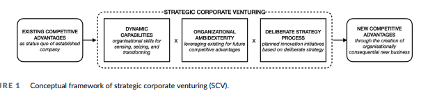
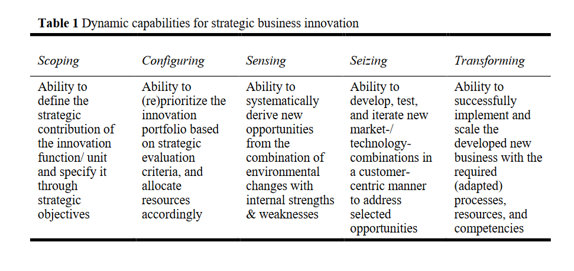

<!DOCTYPE html> <html><head>
		<title>5Cs</title>
		<base href="../">
		<meta id="root-path" root-path="../">
		<meta name="viewport" content="width=device-width, initial-scale=1.0, user-scalable=yes, minimum-scale=1.0, maximum-scale=5.0">
		<meta charset="UTF-8">
		<meta name="description" content="Funil_Inovacao - 5Cs">
		<meta property="og:title" content="5Cs">
		<meta property="og:description" content="Funil_Inovacao - 5Cs">
		<meta property="og:type" content="website">
		<meta property="og:url" content="canvas/5cs.html">
		<meta property="og:image" content="lib\media\pasted-image-20230630104215.png">
		<meta property="og:site_name" content="Funil_Inovacao">
		<link rel="alternate" type="application/rss+xml" title="RSS Feed" href="lib/rss.xml"><script async="" id="webpage-script" src="lib/scripts/webpage.js" onload="this.onload=null;this.setAttribute(&quot;loaded&quot;, &quot;true&quot;)"></script><script type="module" async="" id="graph-view-script" src="lib/scripts/graph-view.js"></script><script async="" id="graph-wasm-script" src="lib/scripts/graph-wasm.js" onload="this.onload=null;this.setAttribute(&quot;loaded&quot;, &quot;true&quot;)"></script><script async="" id="graph-render-worker-script" src="lib/scripts/graph-render-worker.js" onload="this.onload=null;this.setAttribute(&quot;loaded&quot;, &quot;true&quot;)"></script><script async="" id="tinycolor-script" src="lib/scripts/tinycolor.js" onload="this.onload=null;this.setAttribute(&quot;loaded&quot;, &quot;true&quot;)"></script><script async="" id="pixi-script" src="https://cdnjs.cloudflare.com/ajax/libs/pixi.js/7.4.0/pixi.min.js" onload="this.onload=null;this.setAttribute(&quot;loaded&quot;, &quot;true&quot;)"></script><script async="" id="minisearch-script" src="https://cdn.jsdelivr.net/npm/minisearch@6.3.0/dist/umd/index.min.js" onload="this.onload=null;this.setAttribute(&quot;loaded&quot;, &quot;true&quot;)"></script><link rel="icon" href="lib/media/favicon.png"><script async="" id="graph-data-script" src="lib/scripts/graph-data.js" onload="this.onload=null;this.setAttribute(&quot;loaded&quot;, &quot;true&quot;)"></script><style>body{--line-width:40em;--line-width-adaptive:40em;--file-line-width:40em;--sidebar-width:min(20em, 80vw);--collapse-arrow-size:11px;--tree-horizontal-spacing:0.6em;--tree-vertical-spacing:0.6em;--sidebar-margin:12px}.sidebar{height:100%;min-width:calc(var(--sidebar-width) + var(--divider-width-hover));max-width:calc(var(--sidebar-width) + var(--divider-width-hover));font-size:14px;z-index:10;position:relative;overflow:hidden;transition:min-width ease-in-out,max-width ease-in-out;transition-duration:.2s;contain:size}.sidebar-left{left:0}.sidebar-right{right:0}.sidebar.is-collapsed{min-width:0;max-width:0}body.floating-sidebars .sidebar{position:absolute}.sidebar-content{height:100%;min-width:calc(var(--sidebar-width) - var(--divider-width-hover));top:0;padding:var(--sidebar-margin);padding-top:4em;line-height:var(--line-height-tight);background-color:var(--background-secondary);transition:background-color,border-right,border-left,box-shadow;transition-duration:var(--color-fade-speed);transition-timing-function:ease-in-out;position:absolute;display:flex;flex-direction:column}.sidebar:not(.is-collapsed) .sidebar-content{min-width:calc(max(100%,var(--sidebar-width)) - 3px);max-width:calc(max(100%,var(--sidebar-width)) - 3px)}.sidebar-left .sidebar-content{left:0;border-top-right-radius:var(--radius-l);border-bottom-right-radius:var(--radius-l)}.sidebar-right .sidebar-content{right:0;border-top-left-radius:var(--radius-l);border-bottom-left-radius:var(--radius-l)}.sidebar:has(.sidebar-content:empty):has(.topbar-content:empty){display:none}.sidebar-topbar{height:2em;width:var(--sidebar-width);top:var(--sidebar-margin);padding-inline:var(--sidebar-margin);z-index:1;position:fixed;display:flex;align-items:center;transition:width ease-in-out;transition-duration:inherit}.sidebar.is-collapsed .sidebar-topbar{width:calc(2.3em + var(--sidebar-margin) * 2)}.sidebar .sidebar-topbar.is-collapsed{width:0}.sidebar-left .sidebar-topbar{left:0}.sidebar-right .sidebar-topbar{right:0}.topbar-content{overflow:hidden;overflow:clip;width:100%;height:100%;display:flex;align-items:center;transition:inherit}.sidebar.is-collapsed .topbar-content{width:0;transition:inherit}.clickable-icon.sidebar-collapse-icon{background-color:transparent;color:var(--icon-color-focused);padding:0!important;margin:0!important;height:100%!important;width:2.3em!important;margin-inline:0.14em!important;position:absolute}.sidebar-left .clickable-icon.sidebar-collapse-icon{transform:rotateY(180deg);right:var(--sidebar-margin)}.sidebar-right .clickable-icon.sidebar-collapse-icon{transform:rotateY(180deg);left:var(--sidebar-margin)}.clickable-icon.sidebar-collapse-icon svg.svg-icon{width:100%;height:100%}.sidebar-section-header{margin:0 0 1em 0;text-transform:uppercase;letter-spacing:.06em;font-weight:600}body{transition:background-color var(--color-fade-speed) ease-in-out}.webpage-container{display:flex;flex-direction:row;height:100%;width:100%;align-items:stretch;justify-content:center}.document-container{opacity:1;flex-basis:100%;max-width:100%;width:100%;height:100%;display:flex;flex-direction:column;align-items:center;transition:opacity .2s ease-in-out;contain:inline-size}.hide{opacity:0;transition:opacity .2s ease-in-out}.document-container>.markdown-preview-view{margin:var(--sidebar-margin);margin-bottom:0;width:100%;width:-webkit-fill-available;width:-moz-available;width:fill-available;background-color:var(--background-primary);transition:background-color var(--color-fade-speed) ease-in-out;border-top-right-radius:var(--window-radius,var(--radius-m));border-top-left-radius:var(--window-radius,var(--radius-m));overflow-x:hidden!important;overflow-y:auto!important;display:flex!important;flex-direction:column!important;align-items:center!important;contain:inline-size}.document-container>.markdown-preview-view>.markdown-preview-sizer{padding-bottom:80vh!important;width:100%!important;max-width:var(--line-width)!important;flex-basis:var(--line-width)!important;transition:background-color var(--color-fade-speed) ease-in-out;contain:inline-size}.markdown-rendered img:not([width]),.view-content img:not([width]){max-width:100%;outline:0}.document-container>.view-content.embed{display:flex;padding:1em;height:100%;width:100%;align-items:center;justify-content:center}.document-container>.view-content.embed>*{max-width:100%;max-height:100%;object-fit:contain}:has(> :is(.math,table)){overflow-x:auto!important}.document-container>.view-content{overflow-x:auto;contain:content;padding:0;margin:0;height:100%}.scroll-highlight{position:absolute;width:100%;height:100%;pointer-events:none;z-index:1000;background-color:hsla(var(--color-accent-hsl),.25);opacity:0;padding:1em;inset:50%;translate:-50% -50%;border-radius:var(--radius-s)}</style><script defer="">async function loadIncludes(){if("file:"!=location.protocol){let e=document.querySelectorAll("include");for(let t=0;t<e.length;t++){let o=e[t],l=o.getAttribute("src");try{const e=await fetch(l);if(!e.ok){console.log("Could not include file: "+l),o?.remove();continue}let t=await e.text(),n=document.createRange().createContextualFragment(t),i=Array.from(n.children);for(let e of i)e.classList.add("hide"),e.style.transition="opacity 0.5s ease-in-out",setTimeout((()=>{e.classList.remove("hide")}),10);o.before(n),o.remove(),console.log("Included file: "+l)}catch(e){o?.remove(),console.log("Could not include file: "+l,e);continue}}}else{if(document.querySelectorAll("include").length>0){var e=document.createElement("div");e.id="error",e.textContent="Web server exports must be hosted on an http / web server to be viewed correctly.",e.style.position="fixed",e.style.top="50%",e.style.left="50%",e.style.transform="translate(-50%, -50%)",e.style.fontSize="1.5em",e.style.fontWeight="bold",e.style.textAlign="center",document.body.appendChild(e),document.querySelector(".document-container")?.classList.remove("hide")}}}document.addEventListener("DOMContentLoaded",(()=>{loadIncludes()}));let isFileProtocol="file:"==location.protocol;function waitLoadScripts(e,t){let o=e.map((e=>document.getElementById(e+"-script"))),l=0;!function e(){let n=o[l];l++,n&&"true"!=n.getAttribute("loaded")||l<o.length&&e(),l<o.length?n.addEventListener("load",e):t()}()}</script><link rel="stylesheet" href="lib/styles/obsidian.css"><link rel="preload" href="lib/styles/global-variable-styles.css" as="style" onload="this.onload=null;this.rel='stylesheet'"><noscript><link rel="stylesheet" href="lib/styles/global-variable-styles.css"></noscript><link rel="preload" href="lib/styles/supported-plugins.css" as="style" onload="this.onload=null;this.rel='stylesheet'"><noscript><link rel="stylesheet" href="lib/styles/supported-plugins.css"></noscript><link rel="preload" href="lib/styles/main-styles.css" as="style" onload="this.onload=null;this.rel='stylesheet'"><noscript><link rel="stylesheet" href="lib/styles/main-styles.css"></noscript></head><body class="publish css-settings-manager theme-dark show-inline-title show-ribbon"><script defer="">let theme=localStorage.getItem("theme")||(window.matchMedia("(prefers-color-scheme: dark)").matches?"dark":"light");"dark"==theme?(document.body.classList.add("theme-dark"),document.body.classList.remove("theme-light")):(document.body.classList.add("theme-light"),document.body.classList.remove("theme-dark")),window.innerWidth<480?document.body.classList.add("is-phone"):window.innerWidth<768?document.body.classList.add("is-tablet"):window.innerWidth<1024?document.body.classList.add("is-small-screen"):document.body.classList.add("is-large-screen")</script><div class="webpage-container workspace"><div class="sidebar-left sidebar"><div class="sidebar-handle"></div><div class="sidebar-topbar"><div class="topbar-content"><label class="theme-toggle-container" for="theme_toggle"><input class="theme-toggle-input" type="checkbox" id="theme_toggle"><div class="toggle-background"></div></label></div><div class="clickable-icon sidebar-collapse-icon"><svg xmlns="http://www.w3.org/2000/svg" width="100%" height="100%" viewBox="0 0 24 24" fill="none" stroke="currentColor" stroke-width="3" stroke-linecap="round" stroke-linejoin="round" class="svg-icon"><path d="M21 3H3C1.89543 3 1 3.89543 1 5V19C1 20.1046 1.89543 21 3 21H21C22.1046 21 23 20.1046 23 19V5C23 3.89543 22.1046 3 21 3Z"></path><path d="M10 4V20"></path><path d="M4 7H7"></path><path d="M4 10H7"></path><path d="M4 13H7"></path></svg></div></div><div class="sidebar-content"><div class="search-input-container"><input enterkeyhint="search" type="search" spellcheck="false" placeholder="Search..."><div class="search-input-clear-button" aria-label="Clear search"></div></div><include src="lib/html/file-tree.html"></include></div><script defer="">let ls = document.querySelector(".sidebar-left"); ls.classList.add("is-collapsed"); if (window.innerWidth > 768) ls.classList.remove("is-collapsed"); ls.style.setProperty("--sidebar-width", localStorage.getItem("sidebar-left-width"));</script></div><div class="document-container markdown-reading-view hide"><div class="view-content"><style id="MJX-CHTML-styles"></style><div class="canvas-wrapper node-insert-event" tabindex="-1" data-ignore-swipe="true" style="--zoom-multiplier: 1;"><svg class="canvas-background"><pattern id="c3da61f1d241351a" patternUnits="userSpaceOnUse" x="450" y="0" width="20" height="20"><circle cx="0.7" cy="0.7" r="0.7"></circle></pattern><rect x="0" y="0" width="100%" height="100%" fill="url(#c3da61f1d241351a)"></rect></svg><div class="canvas-card-menu" style="z-index: 102;"><div class="canvas-card-menu-button mod-draggable" aria-label="Drag to add card" data-tooltip-position="top"><svg xmlns="http://www.w3.org/2000/svg" width="24" height="24" viewBox="0 0 24 24" fill="none" stroke="currentColor" stroke-width="2" stroke-linecap="round" stroke-linejoin="round" class="svg-icon lucide-sticky-note"><path d="M16 3H5a2 2 0 0 0-2 2v14a2 2 0 0 0 2 2h14a2 2 0 0 0 2-2V8Z"></path><path d="M15 3v4a2 2 0 0 0 2 2h4"></path></svg></div><div class="canvas-card-menu-button mod-draggable" aria-label="Drag to add note from vault" data-tooltip-position="top"><svg xmlns="http://www.w3.org/2000/svg" width="24" height="24" viewBox="0 0 24 24" fill="none" stroke="currentColor" stroke-width="2" stroke-linecap="round" stroke-linejoin="round" class="svg-icon lucide-file-text"><path d="M15 2H6a2 2 0 0 0-2 2v16a2 2 0 0 0 2 2h12a2 2 0 0 0 2-2V7Z"></path><path d="M14 2v4a2 2 0 0 0 2 2h4"></path><path d="M10 9H8"></path><path d="M16 13H8"></path><path d="M16 17H8"></path></svg></div><div class="canvas-card-menu-button mod-draggable" aria-label="Drag to add media from vault" data-tooltip-position="top"><svg xmlns="http://www.w3.org/2000/svg" width="24" height="24" viewBox="0 0 24 24" fill="none" stroke="currentColor" stroke-width="2" stroke-linecap="round" stroke-linejoin="round" class="svg-icon lucide-file-image"><path d="M15 2H6a2 2 0 0 0-2 2v16a2 2 0 0 0 2 2h12a2 2 0 0 0 2-2V7Z"></path><path d="M14 2v4a2 2 0 0 0 2 2h4"></path><circle cx="10" cy="12" r="2"></circle><path d="m20 17-1.296-1.296a2.41 2.41 0 0 0-3.408 0L9 22"></path></svg></div></div><div class="canvas-controls" style="z-index: 102;"><div class="canvas-control-group"><div class="canvas-control-item" aria-label="Canvas settings" data-tooltip-position="left"><svg xmlns="http://www.w3.org/2000/svg" width="24" height="24" viewBox="0 0 24 24" fill="none" stroke="currentColor" stroke-width="2" stroke-linecap="round" stroke-linejoin="round" class="svg-icon lucide-settings"><path d="M12.22 2h-.44a2 2 0 0 0-2 2v.18a2 2 0 0 1-1 1.73l-.43.25a2 2 0 0 1-2 0l-.15-.08a2 2 0 0 0-2.73.73l-.22.38a2 2 0 0 0 .73 2.73l.15.1a2 2 0 0 1 1 1.72v.51a2 2 0 0 1-1 1.74l-.15.09a2 2 0 0 0-.73 2.73l.22.38a2 2 0 0 0 2.73.73l.15-.08a2 2 0 0 1 2 0l.43.25a2 2 0 0 1 1 1.73V20a2 2 0 0 0 2 2h.44a2 2 0 0 0 2-2v-.18a2 2 0 0 1 1-1.73l.43-.25a2 2 0 0 1 2 0l.15.08a2 2 0 0 0 2.73-.73l.22-.39a2 2 0 0 0-.73-2.73l-.15-.08a2 2 0 0 1-1-1.74v-.5a2 2 0 0 1 1-1.74l.15-.09a2 2 0 0 0 .73-2.73l-.22-.38a2 2 0 0 0-2.73-.73l-.15.08a2 2 0 0 1-2 0l-.43-.25a2 2 0 0 1-1-1.73V4a2 2 0 0 0-2-2z"></path><circle cx="12" cy="12" r="3"></circle></svg></div></div><div class="canvas-control-group"><div class="canvas-control-item" aria-label="Ampliar" data-tooltip-position="left"><svg xmlns="http://www.w3.org/2000/svg" width="24" height="24" viewBox="0 0 24 24" fill="none" stroke="currentColor" stroke-width="2" stroke-linecap="round" stroke-linejoin="round" class="svg-icon lucide-plus"><path d="M5 12h14"></path><path d="M12 5v14"></path></svg></div><div class="canvas-control-item" aria-label="Restaurar ampliação" data-tooltip-position="left"><svg xmlns="http://www.w3.org/2000/svg" width="24" height="24" viewBox="0 0 24 24" fill="none" stroke="currentColor" stroke-width="2" stroke-linecap="round" stroke-linejoin="round" class="svg-icon lucide-rotate-cw"><path d="M21 12a9 9 0 1 1-9-9c2.52 0 4.93 1 6.74 2.74L21 8"></path><path d="M21 3v5h-5"></path></svg></div><div class="canvas-control-item" aria-label="Zoom to fit
(Shift + 1)" data-tooltip-position="left"><svg xmlns="http://www.w3.org/2000/svg" width="24" height="24" viewBox="0 0 24 24" fill="none" stroke="currentColor" stroke-width="2" stroke-linecap="round" stroke-linejoin="round" class="svg-icon lucide-maximize"><path d="M8 3H5a2 2 0 0 0-2 2v3"></path><path d="M21 8V5a2 2 0 0 0-2-2h-3"></path><path d="M3 16v3a2 2 0 0 0 2 2h3"></path><path d="M16 21h3a2 2 0 0 0 2-2v-3"></path></svg></div><div class="canvas-control-item" aria-label="Reduzir" data-tooltip-position="left"><svg xmlns="http://www.w3.org/2000/svg" width="24" height="24" viewBox="0 0 24 24" fill="none" stroke="currentColor" stroke-width="2" stroke-linecap="round" stroke-linejoin="round" class="svg-icon lucide-minus"><path d="M5 12h14"></path></svg></div></div><div class="canvas-control-group"><div class="canvas-control-item is-disabled" aria-label="Desfazer" data-tooltip-position="left"><svg xmlns="http://www.w3.org/2000/svg" width="24" height="24" viewBox="0 0 24 24" fill="none" stroke="currentColor" stroke-width="2" stroke-linecap="round" stroke-linejoin="round" class="svg-icon lucide-undo-2"><path d="M9 14 4 9l5-5"></path><path d="M4 9h10.5a5.5 5.5 0 0 1 5.5 5.5a5.5 5.5 0 0 1-5.5 5.5H11"></path></svg></div><div class="canvas-control-item is-disabled" aria-label="Refazer" data-tooltip-position="left"><svg xmlns="http://www.w3.org/2000/svg" width="24" height="24" viewBox="0 0 24 24" fill="none" stroke="currentColor" stroke-width="2" stroke-linecap="round" stroke-linejoin="round" class="svg-icon lucide-redo-2"><path d="m15 14 5-5-5-5"></path><path d="M20 9H9.5A5.5 5.5 0 0 0 4 14.5A5.5 5.5 0 0 0 9.5 20H13"></path></svg></div></div><div class="canvas-control-group"><div class="canvas-control-item" aria-label="Canvas help" data-tooltip-position="left"><svg xmlns="http://www.w3.org/2000/svg" width="24" height="24" viewBox="0 0 24 24" fill="none" stroke="currentColor" stroke-width="2" stroke-linecap="round" stroke-linejoin="round" class="svg-icon lucide-help-circle"><circle cx="12" cy="12" r="10"></circle><path d="M9.09 9a3 3 0 0 1 5.83 1c0 2-3 3-3 3"></path><path d="M12 17h.01"></path></svg></div></div></div><div class="canvas" style="transform: translate(450px, 0px) scale(1) translate(0px, 0px);"><svg class="canvas-edges"><g><path class="canvas-interaction-path" d="M-395 -250 L-388 -250 M-388,-250 C-266.65235890220197,-250 -358.34764109779803,-60 -237,-60"></path><path class="canvas-display-path" d="M-395 -250 L-388 -250 M-388,-250 C-266.65235890220197,-250 -358.34764109779803,-60 -237,-60"></path></g><g><path class="canvas-interaction-path" d="M385 100 L385 107 M385,107 C385,177 385,143 385,213"></path><path class="canvas-display-path" d="M385 100 L385 107 M385,107 C385,177 385,143 385,213"></path></g><g><path class="canvas-interaction-path" d="M510 70 L517 70 M517,70 C604.1148666990887,70 545.8851333009113,-60 633,-60"></path><path class="canvas-display-path" d="M510 70 L517 70 M517,70 C604.1148666990887,70 545.8851333009113,-60 633,-60"></path></g><g><path class="canvas-interaction-path" d="M510 -150 L517 -150 M517,-150 C590.4098086089318,-150 559.5901913910682,-60 633,-60"></path><path class="canvas-display-path" d="M510 -150 L517 -150 M517,-150 C590.4098086089318,-150 559.5901913910682,-60 633,-60"></path></g><g><path class="canvas-interaction-path" d="M890 -60 L897 -60 M897,-60 C967,-60 943,-60 1013,-60"></path><path class="canvas-display-path" d="M890 -60 L897 -60 M897,-60 C967,-60 943,-60 1013,-60"></path></g><g><path class="canvas-interaction-path" d="M1270 -60 L1277 -60 M1277,-60 C1347,-60 1298,-59.5 1368,-59.5"></path><path class="canvas-display-path" d="M1270 -60 L1277 -60 M1277,-60 C1347,-60 1298,-59.5 1368,-59.5"></path></g><g><path class="canvas-interaction-path" d="M1625 -59.5 L1632 -59.5 M1632,-59.5 C1702,-59.5 1643,-60 1713,-60"></path><path class="canvas-display-path" d="M1625 -59.5 L1632 -59.5 M1632,-59.5 C1702,-59.5 1643,-60 1713,-60"></path></g><g><path class="canvas-interaction-path" d="M205 1431 L205 1438 M205,1438 C205,1508 205,1474 205,1544"></path><path class="canvas-display-path" d="M205 1431 L205 1438 M205,1438 C205,1508 205,1474 205,1544"></path></g><g><path class="canvas-interaction-path" d="M205 1151 L205 1144 M205,1144 C205,1074 205,1128 205,1058"></path><path class="canvas-display-path" d="M205 1151 L205 1144 M205,1144 C205,1074 205,1128 205,1058"></path></g><g><path class="canvas-interaction-path" d="M330 1181 L337 1181 M337,1181 C474.5847466109525,1181 435.4152533890475,1322.5 573,1322.5"></path><path class="canvas-display-path" d="M330 1181 L337 1181 M337,1181 C474.5847466109525,1181 435.4152533890475,1322.5 573,1322.5"></path></g><g><path class="canvas-interaction-path" d="M330 1401 L337 1401 M337,1401 C461.356594115471,1401 448.643405884529,1322.5 573,1322.5"></path><path class="canvas-display-path" d="M330 1401 L337 1401 M337,1401 C461.356594115471,1401 448.643405884529,1322.5 573,1322.5"></path></g><g><path class="canvas-interaction-path" d="M830 1322.5 L837 1322.5 M837,1322.5 C907,1322.5 883,1323 953,1323"></path><path class="canvas-display-path" d="M830 1322.5 L837 1322.5 M837,1322.5 C907,1322.5 883,1323 953,1323"></path></g><g><path class="canvas-interaction-path" d="M1210 1323 L1217 1323 M1217,1323 C1287,1323 1244,1324 1314,1324"></path><path class="canvas-display-path" d="M1210 1323 L1217 1323 M1217,1323 C1287,1323 1244,1324 1314,1324"></path></g><g><path class="canvas-interaction-path" d="M1571 1324 L1578 1324 M1578,1324 C1648,1324 1595,1324 1665,1324"></path><path class="canvas-display-path" d="M1571 1324 L1578 1324 M1578,1324 C1648,1324 1595,1324 1665,1324"></path></g><g><path class="canvas-interaction-path" d="M1085 1279 L1085 1272 M1085,1272 C1085,1122 1797,1137 1797,1287"></path><path class="canvas-display-path" d="M1085 1279 L1085 1272 M1085,1272 C1085,1122 1797,1137 1797,1287"></path></g><g><path class="canvas-interaction-path" d="M1922 1324 L1929 1324 M1929,1324 C1999,1324 1943,1323.5 2013,1323.5"></path><path class="canvas-display-path" d="M1922 1324 L1929 1324 M1929,1324 C1999,1324 1943,1323.5 2013,1323.5"></path></g><g><path class="canvas-interaction-path" d="M2300 1323.5 L2307 1323.5 M2307,1323.5 C2377,1323.5 2322,1324.5 2392,1324.5"></path><path class="canvas-display-path" d="M2300 1323.5 L2307 1323.5 M2307,1323.5 C2377,1323.5 2322,1324.5 2392,1324.5"></path></g><g><path class="canvas-interaction-path" d="M2649 1324.5 L2656 1324.5 M2656,1324.5 C2726,1324.5 2689,1325 2759,1325"></path><path class="canvas-display-path" d="M2649 1324.5 L2656 1324.5 M2656,1324.5 C2726,1324.5 2689,1325 2759,1325"></path></g><g><path class="canvas-interaction-path" d="M1446 1354 L1446 1361 M1446,1361 C1446,1511 2524,1543 2524,1393"></path><path class="canvas-display-path" d="M1446 1354 L1446 1361 M1446,1361 C1446,1511 2524,1543 2524,1393"></path></g><g class="is-themed mod-canvas-color-5"><path class="canvas-interaction-path" d="M1446 1354 L1446 1361 M1446,1361 C1446,1511 1259,1483 1259,1633"></path><path class="canvas-display-path" d="M1446 1354 L1446 1361 M1446,1361 C1446,1511 1259,1483 1259,1633"></path></g><g class="is-themed mod-canvas-color-5"><path class="canvas-interaction-path" d="M1085 1367 L1085 1374 M1085,1374 C1085,1524 1259,1483 1259,1633"></path><path class="canvas-display-path" d="M1085 1367 L1085 1374 M1085,1374 C1085,1524 1259,1483 1259,1633"></path></g><g class="is-themed mod-canvas-color-5"><path class="canvas-interaction-path" d="M2160 1350 L2160 1357 M2160,1357 C2160,1507 2160.5,1563 2160.5,1713"></path><path class="canvas-display-path" d="M2160 1350 L2160 1357 M2160,1357 C2160,1507 2160.5,1563 2160.5,1713"></path></g><g><path class="canvas-interaction-path" d="M6890 2308.5 L6897 2308.5 M6897,2308.5 C7047,2308.5 7101,2130 7251,2130"></path><path class="canvas-display-path" d="M6890 2308.5 L6897 2308.5 M6897,2308.5 C7047,2308.5 7101,2130 7251,2130"></path></g><g><path class="canvas-interaction-path" d="M6890 2308.5 L6897 2308.5 M6897,2308.5 C7047,2308.5 7073,2886 7223,2886"></path><path class="canvas-display-path" d="M6890 2308.5 L6897 2308.5 M6897,2308.5 C7047,2308.5 7073,2886 7223,2886"></path></g><g><path class="canvas-interaction-path" d="M8378 2435 L8385 2435 M8385,2435 C8465.5,2435 8465.5,2435 8546,2435"></path><path class="canvas-display-path" d="M8378 2435 L8385 2435 M8385,2435 C8465.5,2435 8465.5,2435 8546,2435"></path></g><g><path class="canvas-interaction-path" d="M7370 2886 L7377 2886 M7377,2886 C7527,2886 7563,2434.5 7713,2434.5"></path><path class="canvas-display-path" d="M7370 2886 L7377 2886 M7377,2886 C7527,2886 7563,2434.5 7713,2434.5"></path></g><g><path class="canvas-interaction-path" d="M7440 2130 L7447 2130 M7447,2130 C7597,2130 7563,2434.5 7713,2434.5"></path><path class="canvas-display-path" d="M7440 2130 L7447 2130 M7447,2130 C7597,2130 7563,2434.5 7713,2434.5"></path></g><g><path class="canvas-interaction-path" d="M7945 2434.5 L7952 2434.5 M7952,2434.5 C8049.000322164414,2434.5 8048.999677835586,2435 8146,2435"></path><path class="canvas-display-path" d="M7945 2434.5 L7952 2434.5 M7952,2434.5 C8049.000322164414,2434.5 8048.999677835586,2435 8146,2435"></path></g><g><path class="canvas-interaction-path" d="M1529.5 4167 L1529.5 4174 M1529.5,4174 C1529.5,4324 1843,4374.5 1993,4374.5"></path><path class="canvas-display-path" d="M1529.5 4167 L1529.5 4174 M1529.5,4174 C1529.5,4324 1843,4374.5 1993,4374.5"></path></g><g><path class="canvas-interaction-path" d="M7300 3440 L7300 3433 M7300,3433 C7300,3363 7300,3467 7300,3397"></path><path class="canvas-display-path" d="M7300 3440 L7300 3433 M7300,3433 C7300,3363 7300,3467 7300,3397"></path></g><g><path class="canvas-interaction-path" d="M7300 3390 L7300 3397 M7300,3397 C7300,3467 7300,3363 7300,3433"></path><path class="canvas-display-path" d="M7300 3390 L7300 3397 M7300,3397 C7300,3467 7300,3363 7300,3433"></path></g><g><path class="canvas-interaction-path" d="M7300 2554 L7300 2547 M7300,2547 C7300,2477 7300,2574 7300,2504"></path><path class="canvas-display-path" d="M7300 2554 L7300 2547 M7300,2547 C7300,2477 7300,2574 7300,2504"></path></g><g><path class="canvas-interaction-path" d="M7300 2497 L7300 2504 M7300,2504 C7300,2574 7300,2477 7300,2547"></path><path class="canvas-display-path" d="M7300 2497 L7300 2504 M7300,2504 C7300,2574 7300,2477 7300,2547"></path></g><g><path class="canvas-interaction-path" d="M6821 2800 L6821 2807 M6821,2807 C6821,2877 6821,2779 6821,2849"></path><path class="canvas-display-path" d="M6821 2800 L6821 2807 M6821,2807 C6821,2877 6821,2779 6821,2849"></path></g><g><path class="canvas-interaction-path" d="M6821 2856 L6821 2849 M6821,2849 C6821,2779 6821,2877 6821,2807"></path><path class="canvas-display-path" d="M6821 2856 L6821 2849 M6821,2849 C6821,2779 6821,2877 6821,2807"></path></g><g><path class="canvas-interaction-path" d="M8678 2405 L8678 2398 M8678,2398 C8678,2328 8678,2433 8678,2363"></path><path class="canvas-display-path" d="M8678 2405 L8678 2398 M8678,2398 C8678,2328 8678,2433 8678,2363"></path></g><g><path class="canvas-interaction-path" d="M8678 2356 L8678 2363 M8678,2363 C8678,2433 8678,2328 8678,2398"></path><path class="canvas-display-path" d="M8678 2356 L8678 2363 M8678,2363 C8678,2433 8678,2328 8678,2398"></path></g><g><path class="canvas-interaction-path" d="M8803 2435 L8810 2435 M8810,2435 C8901.5,2435 8901.5,2435 8993,2435"></path><path class="canvas-display-path" d="M8803 2435 L8810 2435 M8810,2435 C8901.5,2435 8901.5,2435 8993,2435"></path></g><g class="is-themed mod-canvas-color-1"><path class="canvas-interaction-path" d="M7495 2880 L7502 2880 M7502,2880 C7652,2880 7871,3045.5 8021,3045.5"></path><path class="canvas-display-path" d="M7495 2880 L7502 2880 M7502,2880 C7652,2880 7871,3045.5 8021,3045.5"></path></g><g><path class="canvas-interaction-path" d="M9125 2465 L9125 2472 M9125,2472 C9125,2542 9125,2463 9125,2533"></path><path class="canvas-display-path" d="M9125 2465 L9125 2472 M9125,2472 C9125,2542 9125,2463 9125,2533"></path></g><g><path class="canvas-interaction-path" d="M9125 2540 L9125 2533 M9125,2533 C9125,2463 9125,2542 9125,2472"></path><path class="canvas-display-path" d="M9125 2540 L9125 2533 M9125,2533 C9125,2463 9125,2542 9125,2472"></path></g><g><path class="canvas-interaction-path" d="M9125 2405 L9125 2398 M9125,2398 C9125,2322.4995860938498 9125.5,2322.5004139061502 9125.5,2247"></path><path class="canvas-display-path" d="M9125 2405 L9125 2398 M9125,2398 C9125,2322.4995860938498 9125.5,2322.5004139061502 9125.5,2247"></path></g><g><path class="canvas-interaction-path" d="M6480 2870.5 L6487 2870.5 M6487,2870.5 C6560.154374441998,2870.5 6559.845625558002,2880 6633,2880"></path><path class="canvas-display-path" d="M6480 2870.5 L6487 2870.5 M6487,2870.5 C6560.154374441998,2870.5 6559.845625558002,2880 6633,2880"></path></g></svg><svg class="canvas-edges"><g><g style="transform: translate(-230px, -60px) rotate(90deg);"><polygon class="canvas-path-end" points="0,0 6.5,10.4 -6.5,10.4"></polygon></g></g><g><g style="transform: translate(385px, 220px) rotate(180deg);"><polygon class="canvas-path-end" points="0,0 6.5,10.4 -6.5,10.4"></polygon></g></g><g><g style="transform: translate(640px, -60px) rotate(90deg);"><polygon class="canvas-path-end" points="0,0 6.5,10.4 -6.5,10.4"></polygon></g></g><g><g style="transform: translate(640px, -60px) rotate(90deg);"><polygon class="canvas-path-end" points="0,0 6.5,10.4 -6.5,10.4"></polygon></g></g><g><g style="transform: translate(1020px, -60px) rotate(90deg);"><polygon class="canvas-path-end" points="0,0 6.5,10.4 -6.5,10.4"></polygon></g></g><g><g style="transform: translate(1375px, -59.5px) rotate(90deg);"><polygon class="canvas-path-end" points="0,0 6.5,10.4 -6.5,10.4"></polygon></g></g><g><g style="transform: translate(1720px, -60px) rotate(90deg);"><polygon class="canvas-path-end" points="0,0 6.5,10.4 -6.5,10.4"></polygon></g></g><g><g style="transform: translate(205px, 1551px) rotate(180deg);"><polygon class="canvas-path-end" points="0,0 6.5,10.4 -6.5,10.4"></polygon></g></g><g><g style="transform: translate(205px, 1051px) rotate(0deg);"><polygon class="canvas-path-end" points="0,0 6.5,10.4 -6.5,10.4"></polygon></g></g><g><g style="transform: translate(580px, 1322.5px) rotate(90deg);"><polygon class="canvas-path-end" points="0,0 6.5,10.4 -6.5,10.4"></polygon></g></g><g><g style="transform: translate(580px, 1322.5px) rotate(90deg);"><polygon class="canvas-path-end" points="0,0 6.5,10.4 -6.5,10.4"></polygon></g></g><g><g style="transform: translate(960px, 1323px) rotate(90deg);"><polygon class="canvas-path-end" points="0,0 6.5,10.4 -6.5,10.4"></polygon></g></g><g><g style="transform: translate(1321px, 1324px) rotate(90deg);"><polygon class="canvas-path-end" points="0,0 6.5,10.4 -6.5,10.4"></polygon></g></g><g><g style="transform: translate(1672px, 1324px) rotate(90deg);"><polygon class="canvas-path-end" points="0,0 6.5,10.4 -6.5,10.4"></polygon></g></g><g><g style="transform: translate(1797px, 1294px) rotate(180deg);"><polygon class="canvas-path-end" points="0,0 6.5,10.4 -6.5,10.4"></polygon></g></g><g><g style="transform: translate(2020px, 1323.5px) rotate(90deg);"><polygon class="canvas-path-end" points="0,0 6.5,10.4 -6.5,10.4"></polygon></g></g><g><g style="transform: translate(2399px, 1324.5px) rotate(90deg);"><polygon class="canvas-path-end" points="0,0 6.5,10.4 -6.5,10.4"></polygon></g></g><g><g style="transform: translate(2766px, 1325px) rotate(90deg);"><polygon class="canvas-path-end" points="0,0 6.5,10.4 -6.5,10.4"></polygon></g></g><g><g style="transform: translate(2524px, 1386px) rotate(0deg);"><polygon class="canvas-path-end" points="0,0 6.5,10.4 -6.5,10.4"></polygon></g></g><g class="is-themed mod-canvas-color-5"><g style="transform: translate(1259px, 1640px) rotate(180deg);"><polygon class="canvas-path-end" points="0,0 6.5,10.4 -6.5,10.4"></polygon></g></g><g class="is-themed mod-canvas-color-5"><g style="transform: translate(1259px, 1640px) rotate(180deg);"><polygon class="canvas-path-end" points="0,0 6.5,10.4 -6.5,10.4"></polygon></g></g><g class="is-themed mod-canvas-color-5"><g style="transform: translate(2160.5px, 1720px) rotate(180deg);"><polygon class="canvas-path-end" points="0,0 6.5,10.4 -6.5,10.4"></polygon></g></g><g><g style="transform: translate(7258px, 2130px) rotate(90deg);"><polygon class="canvas-path-end" points="0,0 6.5,10.4 -6.5,10.4"></polygon></g></g><g><g style="transform: translate(7230px, 2886px) rotate(90deg);"><polygon class="canvas-path-end" points="0,0 6.5,10.4 -6.5,10.4"></polygon></g></g><g><g style="transform: translate(8553px, 2435px) rotate(90deg);"><polygon class="canvas-path-end" points="0,0 6.5,10.4 -6.5,10.4"></polygon></g></g><g><g style="transform: translate(7720px, 2434.5px) rotate(90deg);"><polygon class="canvas-path-end" points="0,0 6.5,10.4 -6.5,10.4"></polygon></g></g><g><g style="transform: translate(7720px, 2434.5px) rotate(90deg);"><polygon class="canvas-path-end" points="0,0 6.5,10.4 -6.5,10.4"></polygon></g></g><g><g style="transform: translate(8153px, 2435px) rotate(90deg);"><polygon class="canvas-path-end" points="0,0 6.5,10.4 -6.5,10.4"></polygon></g></g><g><g style="transform: translate(2000px, 4374.5px) rotate(90deg);"><polygon class="canvas-path-end" points="0,0 6.5,10.4 -6.5,10.4"></polygon></g></g><g><g style="transform: translate(7300px, 3390px) rotate(0deg);"><polygon class="canvas-path-end" points="0,0 6.5,10.4 -6.5,10.4"></polygon></g></g><g><g style="transform: translate(7300px, 3440px) rotate(180deg);"><polygon class="canvas-path-end" points="0,0 6.5,10.4 -6.5,10.4"></polygon></g></g><g><g style="transform: translate(7300px, 2497px) rotate(0deg);"><polygon class="canvas-path-end" points="0,0 6.5,10.4 -6.5,10.4"></polygon></g></g><g><g style="transform: translate(7300px, 2554px) rotate(180deg);"><polygon class="canvas-path-end" points="0,0 6.5,10.4 -6.5,10.4"></polygon></g></g><g><g style="transform: translate(6821px, 2856px) rotate(180deg);"><polygon class="canvas-path-end" points="0,0 6.5,10.4 -6.5,10.4"></polygon></g></g><g><g style="transform: translate(6821px, 2800px) rotate(0deg);"><polygon class="canvas-path-end" points="0,0 6.5,10.4 -6.5,10.4"></polygon></g></g><g><g style="transform: translate(8678px, 2356px) rotate(0deg);"><polygon class="canvas-path-end" points="0,0 6.5,10.4 -6.5,10.4"></polygon></g></g><g><g style="transform: translate(8678px, 2405px) rotate(180deg);"><polygon class="canvas-path-end" points="0,0 6.5,10.4 -6.5,10.4"></polygon></g></g><g><g style="transform: translate(9000px, 2435px) rotate(90deg);"><polygon class="canvas-path-end" points="0,0 6.5,10.4 -6.5,10.4"></polygon></g></g><g class="is-themed mod-canvas-color-1"><g style="transform: translate(8028px, 3045.5px) rotate(90deg);"><polygon class="canvas-path-end" points="0,0 6.5,10.4 -6.5,10.4"></polygon></g></g><g><g style="transform: translate(9125px, 2540px) rotate(180deg);"><polygon class="canvas-path-end" points="0,0 6.5,10.4 -6.5,10.4"></polygon></g></g><g><g style="transform: translate(9125px, 2465px) rotate(0deg);"><polygon class="canvas-path-end" points="0,0 6.5,10.4 -6.5,10.4"></polygon></g></g><g><g style="transform: translate(9125.5px, 2240px) rotate(0deg);"><polygon class="canvas-path-end" points="0,0 6.5,10.4 -6.5,10.4"></polygon></g></g><g><g style="transform: translate(6640px, 2880px) rotate(90deg);"><polygon class="canvas-path-end" points="0,0 6.5,10.4 -6.5,10.4"></polygon></g></g></svg><div class="canvas-node canvas-node-group" style="z-index: -1368000; transform: translate(6640px, 2080px); width: 855px; height: 1600px; --canvas-node-width: 855px; --canvas-node-height: 1600px;"><div class="canvas-node-container"><div class="canvas-node-content"></div></div><div class="canvas-group-label" spellcheck="false">Espaço de Oportunidades</div></div><div class="canvas-node canvas-node-group" style="z-index: -151800; transform: translate(1080px, 2720px); width: 440px; height: 345px; --canvas-node-width: 440px; --canvas-node-height: 345px;"><div class="canvas-node-container"><div class="canvas-node-content"></div></div><div class="canvas-group-label" spellcheck="false">Análise</div></div><div class="canvas-node canvas-node-group" style="z-index: -150150; transform: translate(6646px, 2371px); width: 350px; height: 429px; --canvas-node-width: 350px; --canvas-node-height: 429px;"><div class="canvas-node-container"><div class="canvas-node-content"></div></div><div class="canvas-group-label" spellcheck="false">Scoping</div></div><div class="canvas-node canvas-node-group" style="z-index: -137600; transform: translate(7140px, 2960px); width: 320px; height: 430px; --canvas-node-width: 320px; --canvas-node-height: 430px;"><div class="canvas-node-container"><div class="canvas-node-content"></div></div><div class="canvas-group-label" spellcheck="false">Sensing</div></div><div class="canvas-node canvas-node-group" style="z-index: -95040; transform: translate(7140px, 2200px); width: 320px; height: 297px; --canvas-node-width: 320px; --canvas-node-height: 297px;"><div class="canvas-node-container"><div class="canvas-node-content"></div></div><div class="canvas-group-label" spellcheck="false">Configuring</div></div><div class="canvas-node is-themed mod-canvas-color-4" style="z-index: 2; transform: translate(7160px, 2362px); width: 280px; height: 115px; --canvas-node-width: 280px; --canvas-node-height: 115px;"><div class="canvas-node-container"><div class="canvas-node-content markdown-embed"><div class="markdown-embed-content node-insert-event"><div class="markdown-preview-view markdown-rendered"><div class="markdown-preview-sizer markdown-preview-section"><div class="el-p"><p dir="auto">OKRs<br>
Alocações<br>
Horas Lei do Bem</p></div></div></div></div><div class="markdown-embed-content node-insert-event" style="display: none;"></div></div><div class="canvas-node-content-blocker"></div></div></div><div class="canvas-node is-themed mod-canvas-color-4" style="z-index: 3; transform: translate(7159px, 2220px); width: 280px; height: 115px; --canvas-node-width: 280px; --canvas-node-height: 115px;"><div class="canvas-node-container"><div class="canvas-node-content markdown-embed"><div class="markdown-embed-content node-insert-event"><div class="markdown-preview-view markdown-rendered"><div class="markdown-preview-sizer markdown-preview-section"><div class="el-p"><p dir="auto">Planejamento Capacidade </p></div></div></div></div><div class="markdown-embed-content node-insert-event" style="display: none;"></div></div><div class="canvas-node-content-blocker"></div></div></div><div class="canvas-node is-themed mod-canvas-color-custom" style="z-index: 4; transform: translate(6740px, 2281px); width: 150px; height: 55px; --canvas-node-width: 150px; --canvas-node-height: 55px; --canvas-color: 5,55,255;"><div class="canvas-node-container"><div class="canvas-node-content markdown-embed"><div class="markdown-embed-content node-insert-event"><div class="markdown-preview-view markdown-rendered"><div class="markdown-preview-sizer markdown-preview-section"><div class="el-p"><p dir="auto">Traction</p></div></div></div></div><div class="markdown-embed-content node-insert-event" style="display: none;"></div></div><div class="canvas-node-content-blocker"></div></div></div><div class="canvas-node" style="z-index: 5; transform: translate(2479px, 175px); width: 937px; height: 547px; --canvas-node-width: 937px; --canvas-node-height: 547px;"><div class="canvas-node-container"><div class="canvas-node-content media-embed image-embed is-loaded"></div><div class="canvas-node-content-blocker"></div></div><div class="canvas-node-label">Pasted image 20230630104215.png</div></div><div class="canvas-node is-themed mod-canvas-color-1" style="z-index: 6; transform: translate(2780px, 300px); width: 160px; height: 96px; --canvas-node-width: 160px; --canvas-node-height: 96px;"><div class="canvas-node-container"><div class="canvas-node-content markdown-embed"><div class="markdown-embed-content node-insert-event"><div class="markdown-preview-view markdown-rendered"><div class="markdown-preview-sizer markdown-preview-section"><div class="el-p"><p dir="auto">DB (Ex DBLab + Cel Tecnologia)</p></div></div></div></div><div class="markdown-embed-content node-insert-event" style="display: none;"></div></div><div class="canvas-node-content-blocker"></div></div></div><div class="canvas-node" style="z-index: 7; transform: translate(80px, 840px); width: 250px; height: 211px; --canvas-node-width: 250px; --canvas-node-height: 211px;"><div class="canvas-node-container"><div class="canvas-node-content markdown-embed"><div class="markdown-embed-content node-insert-event"><div class="markdown-preview-view markdown-rendered"><div class="markdown-preview-sizer markdown-preview-section"><div class="el-p"><p dir="auto">P&amp;D, Linhas de Pesquisa, etc</p></div><div class="el-p"><p dir="auto">Inovação Incremental, lenta (grande chance de ser superado por Startup)</p></div></div></div></div><div class="markdown-embed-content node-insert-event" style="display: none;"></div></div><div class="canvas-node-content-blocker"></div></div></div><div class="canvas-node is-themed mod-canvas-color-3" style="z-index: 8; transform: translate(2766px, 1295px); width: 250px; height: 60px; --canvas-node-width: 250px; --canvas-node-height: 60px;"><div class="canvas-node-container"><div class="canvas-node-content markdown-embed"><div class="markdown-embed-content node-insert-event"><div class="markdown-preview-view markdown-rendered"><div class="markdown-preview-sizer markdown-preview-section"><div class="el-p"><p dir="auto">PIPELINE DE INOVAÇÂO V1</p></div></div></div></div><div class="markdown-embed-content node-insert-event" style="display: none;"></div></div><div class="canvas-node-content-blocker"></div></div></div><div class="canvas-node is-themed mod-canvas-color-4" style="z-index: 9; transform: translate(2399px, 1263px); width: 250px; height: 123px; --canvas-node-width: 250px; --canvas-node-height: 123px;"><div class="canvas-node-container"><div class="canvas-node-content markdown-embed"><div class="markdown-embed-content node-insert-event"><div class="markdown-preview-view markdown-rendered"><div class="markdown-preview-sizer markdown-preview-section"><div class="el-p"><p dir="auto">Definir Inovações a partir das capacidades existentes (POCs) e novas (Spikes)</p></div></div></div></div><div class="markdown-embed-content node-insert-event" style="display: none;"></div></div><div class="canvas-node-content-blocker"></div></div></div><div class="canvas-node" style="z-index: 10; transform: translate(4555px, -59px); width: 541px; height: 763px; --canvas-node-width: 541px; --canvas-node-height: 763px;"><div class="canvas-node-container"><div class="canvas-node-content pdf-embed is-loaded node-insert-event"><div class="pdf-toolbar"><div class="pdf-toolbar-left"><div class="clickable-icon" aria-label="Toggle sidebar"><svg xmlns="http://www.w3.org/2000/svg" width="24" height="24" viewBox="0 0 24 24" fill="none" stroke="currentColor" stroke-width="2" stroke-linecap="round" stroke-linejoin="round" class="svg-icon lucide-layout-list"><rect x="3" y="3" width="7" height="7" rx="1"></rect><rect x="3" y="14" width="7" height="7" rx="1"></rect><path d="M14 4h7"></path><path d="M14 9h7"></path><path d="M14 15h7"></path><path d="M14 20h7"></path></svg></div><div class="clickable-icon" aria-label="Sidebar options"><svg xmlns="http://www.w3.org/2000/svg" width="24" height="24" viewBox="0 0 24 24" fill="none" stroke="currentColor" stroke-width="2" stroke-linecap="round" stroke-linejoin="round" class="svg-icon lucide-chevron-down"><path d="m6 9 6 6 6-6"></path></svg></div><div class="pdf-toolbar-spacer"></div><div class="clickable-icon" aria-label="Reduzir"><svg xmlns="http://www.w3.org/2000/svg" width="24" height="24" viewBox="0 0 24 24" fill="none" stroke="currentColor" stroke-width="2" stroke-linecap="round" stroke-linejoin="round" class="svg-icon lucide-zoom-out"><circle cx="11" cy="11" r="8"></circle><line x1="21" y1="21" x2="16.65" y2="16.65"></line><line x1="8" y1="11" x2="14" y2="11"></line></svg></div><div class="pdf-toolbar-divider"></div><div class="clickable-icon" aria-label="Ampliar"><svg xmlns="http://www.w3.org/2000/svg" width="24" height="24" viewBox="0 0 24 24" fill="none" stroke="currentColor" stroke-width="2" stroke-linecap="round" stroke-linejoin="round" class="svg-icon lucide-zoom-in"><circle cx="11" cy="11" r="8"></circle><line x1="21" y1="21" x2="16.65" y2="16.65"></line><line x1="11" y1="8" x2="11" y2="14"></line><line x1="8" y1="11" x2="14" y2="11"></line></svg></div><div class="clickable-icon" aria-label="Display options"><svg xmlns="http://www.w3.org/2000/svg" width="24" height="24" viewBox="0 0 24 24" fill="none" stroke="currentColor" stroke-width="2" stroke-linecap="round" stroke-linejoin="round" class="svg-icon lucide-chevron-down"><path d="m6 9 6 6 6-6"></path></svg></div><div class="pdf-toolbar-spacer"></div><input class="pdf-page-input" type="number" max="0"><span class="pdf-page-numbers">of 0</span></div><div class="pdf-toolbar-right"><div class="pdf-toolbar-spacer"></div><div class="clickable-icon" aria-label="Abrir"><svg xmlns="http://www.w3.org/2000/svg" width="24" height="24" viewBox="0 0 24 24" fill="none" stroke="currentColor" stroke-width="2" stroke-linecap="round" stroke-linejoin="round" class="svg-icon lucide-more-vertical"><circle cx="12" cy="12" r="1"></circle><circle cx="12" cy="5" r="1"></circle><circle cx="12" cy="19" r="1"></circle></svg></div><div class="clickable-icon" aria-label="Save current position in document"><svg xmlns="http://www.w3.org/2000/svg" width="24" height="24" viewBox="0 0 24 24" fill="none" stroke="currentColor" stroke-width="2" stroke-linecap="round" stroke-linejoin="round" class="svg-icon lucide-file-symlink"><path d="m10 18 3-3-3-3"></path><path d="M14 2v4a2 2 0 0 0 2 2h4"></path><path d="M4 11V4a2 2 0 0 1 2-2h9l5 5v13a2 2 0 0 1-2 2H6a2 2 0 0 1-2-2v-3a2 2 0 0 1 2-2h7"></path></svg></div></div></div><div class="pdf-container"><div class="pdf-content-container node-insert-event"><div class="pdf-viewer-container node-insert-event" style="position: absolute;"><div class="pdfViewer removePageBorders"></div></div><div class="pdf-sidebar-container"><div class="pdf-sidebar-content-wrapper"><div class="pdf-sidebar-content"><div class="pdf-thumbnail-view"></div><div class="pdf-outline-view hidden"></div></div></div><div class="pdf-sidebar-resizer"></div></div><div class="pdf-findbar pdf-toolbar mod-hidden"><div class="pdf-search-wrapper"><div class="pdf-findbar-message" aria-live="polite"><span class="pdf-toolbar-label pdf-find-results-count"></span></div><div class="search-input-container global-search-input-container"><input enterkeyhint="search" type="search" spellcheck="false" placeholder="Digite para pesquisar..."><div class="search-input-clear-button" aria-label="Limpar pesquisa"></div><div class="input-right-decorator clickable-icon" aria-label="Correspondência"><svg xmlns="http://www.w3.org/2000/svg" width="24" height="24" viewBox="0 0 24 24" fill="none" stroke="currentColor" stroke-width="2" stroke-linecap="round" stroke-linejoin="round" class="svg-icon uppercase-lowercase-a"><path d="M10.5 14L4.5 14"></path><path d="M12.5 18L7.5 6"></path><path d="M3 18L7.5 6"></path><path d="M15.9526 10.8322C15.9526 10.8322 16.6259 10 18.3832 10C20.1406 9.99999 20.9986 11.0587 20.9986 11.9682V16.7018C20.9986 17.1624 21.2815 17.7461 21.7151 18"></path><path d="M20.7151 13.5C18.7151 13.5 15.7151 14.2837 15.7151 16C15.7151 17.7163 17.5908 18.2909 18.7151 18C19.5635 17.7804 20.5265 17.3116 20.889 16.6199"></path></svg></div></div><button class="pdf-toolbar-button clickable-icon" aria-label="Shift + F3" data-tooltip-position="top"><svg xmlns="http://www.w3.org/2000/svg" width="24" height="24" viewBox="0 0 24 24" fill="none" stroke="currentColor" stroke-width="2" stroke-linecap="round" stroke-linejoin="round" class="svg-icon lucide-arrow-up"><path d="m5 12 7-7 7 7"></path><path d="M12 19V5"></path></svg></button><button class="pdf-toolbar-button clickable-icon" aria-label="F3" data-tooltip-position="top"><svg xmlns="http://www.w3.org/2000/svg" width="24" height="24" viewBox="0 0 24 24" fill="none" stroke="currentColor" stroke-width="2" stroke-linecap="round" stroke-linejoin="round" class="svg-icon lucide-arrow-down"><path d="M12 5v14"></path><path d="m19 12-7 7-7-7"></path></svg></button><div class="clickable-icon pdf-findbar-settings-btn" aria-label="Search settings"><svg xmlns="http://www.w3.org/2000/svg" width="24" height="24" viewBox="0 0 24 24" fill="none" stroke="currentColor" stroke-width="2" stroke-linecap="round" stroke-linejoin="round" class="svg-icon lucide-sliders-horizontal"><line x1="21" y1="4" x2="14" y2="4"></line><line x1="10" y1="4" x2="3" y2="4"></line><line x1="21" y1="12" x2="12" y2="12"></line><line x1="8" y1="12" x2="3" y2="12"></line><line x1="21" y1="20" x2="16" y2="20"></line><line x1="12" y1="20" x2="3" y2="20"></line><line x1="14" y1="2" x2="14" y2="6"></line><line x1="8" y1="10" x2="8" y2="14"></line><line x1="16" y1="18" x2="16" y2="22"></line></svg></div><div class="pdf-toolbar-divider"></div><div class="clickable-icon" aria-label="Fechar"><svg xmlns="http://www.w3.org/2000/svg" width="24" height="24" viewBox="0 0 24 24" fill="none" stroke="currentColor" stroke-width="2" stroke-linecap="round" stroke-linejoin="round" class="svg-icon lucide-x"><path d="M18 6 6 18"></path><path d="m6 6 12 12"></path></svg></div></div></div></div></div></div><div class="canvas-node-content-blocker"></div></div><div class="canvas-node-label">2023WeissKanbach.pdf</div></div><div class="canvas-node" style="z-index: 11; transform: translate(380px, 722px); width: 250px; height: 224px; --canvas-node-width: 250px; --canvas-node-height: 224px;"><div class="canvas-node-container"><div class="canvas-node-content markdown-embed"><div class="markdown-embed-content node-insert-event"><div class="markdown-preview-view markdown-rendered"><div class="markdown-preview-sizer markdown-preview-section"><div class="el-p"><p dir="auto">Metodos lentos e de alto investimento que correm grande risco de ficarem defasados, ao serem superados por estratégias focas no cliente (startups)</p></div></div></div></div><div class="markdown-embed-content node-insert-event" style="display: none;"></div></div><div class="canvas-node-content-blocker"></div></div></div><div class="canvas-node" style="z-index: 12; transform: translate(-720px, 100px); width: 308px; height: 150px; --canvas-node-width: 308px; --canvas-node-height: 150px;"><div class="canvas-node-container"><div class="canvas-node-content markdown-embed"><div class="markdown-embed-content node-insert-event"><div class="markdown-preview-view markdown-rendered"><div class="markdown-preview-sizer markdown-preview-section"><div class="el-p"><p dir="auto">Outsource Inovação para penquenas unidades (tipo,Startup)</p></div><div class="el-p"><p dir="auto">Chance de Sucesso 1:17.000</p></div></div></div></div><div class="markdown-embed-content node-insert-event" style="display: none;"></div></div><div class="canvas-node-content-blocker"></div></div></div><div class="canvas-node" style="z-index: 13; transform: translate(260px, 220px); width: 250px; height: 60px; --canvas-node-width: 250px; --canvas-node-height: 60px;"><div class="canvas-node-container"><div class="canvas-node-content markdown-embed"><div class="markdown-embed-content node-insert-event"><div class="markdown-preview-view markdown-rendered"><div class="markdown-preview-sizer markdown-preview-section"><div class="el-p"><p dir="auto">Grande chance de insucesso</p></div></div></div></div><div class="markdown-embed-content node-insert-event" style="display: none;"></div></div><div class="canvas-node-content-blocker"></div></div></div><div class="canvas-node" style="z-index: 14; transform: translate(260px, 40px); width: 250px; height: 60px; --canvas-node-width: 250px; --canvas-node-height: 60px;"><div class="canvas-node-container"><div class="canvas-node-content markdown-embed"><div class="markdown-embed-content node-insert-event"><div class="markdown-preview-view markdown-rendered"><div class="markdown-preview-sizer markdown-preview-section"><div class="el-p"><p dir="auto">Novas opotunidade (Necessidades do Usúario)</p></div></div></div></div><div class="markdown-embed-content node-insert-event" style="display: none;"></div></div><div class="canvas-node-content-blocker"></div></div></div><div class="canvas-node" style="z-index: 15; transform: translate(1880px, 155px); width: 0px; height: 0px; --canvas-node-width: 0px; --canvas-node-height: 0px;"><div class="canvas-node-container"><div class="canvas-node-content media-embed image-embed is-loaded"></div><div class="canvas-node-content-blocker"></div></div><div class="canvas-node-label">Screenshot 2023-05-16 at 11-17-46 Lucas Sauberschwarz Lysander Weiss - The Corporates Strike Back_ How Large Companies Win the Innovation Race Against Disruptive Start-ups-Springer (2022).pdf.png</div></div><div class="canvas-node" style="z-index: 16; transform: translate(1720px, -90px); width: 250px; height: 60px; --canvas-node-width: 250px; --canvas-node-height: 60px;"><div class="canvas-node-container"><div class="canvas-node-content markdown-embed"><div class="markdown-embed-content node-insert-event"><div class="markdown-preview-view markdown-rendered"><div class="markdown-preview-sizer markdown-preview-section"><div class="el-p"><p dir="auto">IDENTIFICAR OS PROBLEMAS</p></div></div></div></div><div class="markdown-embed-content node-insert-event" style="display: none;"></div></div><div class="canvas-node-content-blocker"></div></div></div><div class="canvas-node" style="z-index: 17; transform: translate(1548px, 875px); width: 752px; height: 176px; --canvas-node-width: 752px; --canvas-node-height: 176px;"><div class="canvas-node-container"><div class="canvas-node-content media-embed image-embed is-loaded"></div><div class="canvas-node-content-blocker"></div></div><div class="canvas-node-label">Pasted image 20230807091451.png</div></div><div class="canvas-node is-themed mod-canvas-color-1" style="z-index: 18; transform: translate(2020px, 1297px); width: 280px; height: 53px; --canvas-node-width: 280px; --canvas-node-height: 53px;"><div class="canvas-node-container"><div class="canvas-node-content markdown-embed"><div class="markdown-embed-content node-insert-event"><div class="markdown-preview-view markdown-rendered"><div class="markdown-preview-sizer markdown-preview-section"><div class="el-p"><p dir="auto">Mapear Dores do Segmento</p></div></div></div></div><div class="markdown-embed-content node-insert-event" style="display: none;"></div></div><div class="canvas-node-content-blocker"></div></div></div><div class="canvas-node" style="z-index: 19; transform: translate(959px, 360px); width: 373px; height: 120px; --canvas-node-width: 373px; --canvas-node-height: 120px;"><div class="canvas-node-container"><div class="canvas-node-content markdown-embed"><div class="markdown-embed-content node-insert-event"><div class="markdown-preview-view markdown-rendered"><div class="markdown-preview-sizer markdown-preview-section"><div class="el-p"><p dir="auto">Critérios Estratégicos:<br>
Canvas da Inovação (identificação de barreiras)</p></div></div></div></div><div class="markdown-embed-content node-insert-event" style="display: none;"></div></div><div class="canvas-node-content-blocker"></div></div></div><div class="canvas-node is-themed mod-canvas-color-1" style="z-index: 20; transform: translate(945px, 80px); width: 0px; height: 0px; --canvas-node-width: 0px; --canvas-node-height: 0px;"><div class="canvas-node-container"><div class="canvas-node-content media-embed image-embed is-loaded"></div><div class="canvas-node-content-blocker"></div></div><div class="canvas-node-label">Screenshot 2023-05-16 at 16-55-54 Lucas Sauberschwarz Lysander Weiss - The Corporates Strike Back_ How Large Companies Win the Innovation Race Against Disruptive Start-ups-Springer (2022).pdf.png</div></div><div class="canvas-node" style="z-index: 21; transform: translate(5340px, -131px); width: 410px; height: 191px; --canvas-node-width: 410px; --canvas-node-height: 191px;"><div class="canvas-node-container"><div class="canvas-node-content markdown-embed"><div class="markdown-embed-content node-insert-event"><div class="markdown-preview-view markdown-rendered"><div class="markdown-preview-sizer markdown-preview-section"><div class="el-p"><p dir="auto">‘[The new business] should already be something where we have some kind of Unfair Advantage that we can leverage. In any form. It doesn't just have to be assets that we own as a company, but maybe also a partnership that we have with a supplier or with other companies, that exist there’</p></div></div></div></div><div class="markdown-embed-content node-insert-event" style="display: none;"></div></div><div class="canvas-node-content-blocker"></div></div></div><div class="canvas-node" style="z-index: 22; transform: translate(5314px, 91px); width: 463px; height: 169px; --canvas-node-width: 463px; --canvas-node-height: 169px;"><div class="canvas-node-container"><div class="canvas-node-content markdown-embed"><div class="markdown-embed-content node-insert-event"><div class="markdown-preview-view markdown-rendered"><div class="markdown-preview-sizer markdown-preview-section"><div class="el-p"><p dir="auto">‘We are an authentic part of the technology ecosystem but feel equally at home in the corporate environment. By linking both worlds, we discover unique potentials and build bridges to use them</p></div></div></div></div><div class="markdown-embed-content node-insert-event" style="display: none;"></div></div><div class="canvas-node-content-blocker"></div></div></div><div class="canvas-node" style="z-index: 23; transform: translate(5267px, 284px); width: 583px; height: 146px; --canvas-node-width: 583px; --canvas-node-height: 146px;"><div class="canvas-node-container"><div class="canvas-node-content markdown-embed"><div class="markdown-embed-content node-insert-event"><div class="markdown-preview-view markdown-rendered"><div class="markdown-preview-sizer markdown-preview-section"><div class="el-p"><p dir="auto">‘We are organised in such a way that we have a very clear search strategy and a clear orientation as to where we want to go. And this strategic orientation is always ultimately a guideline for action and a benchmark for what we are looking for’</p></div></div></div></div><div class="markdown-embed-content node-insert-event" style="display: none;"></div></div><div class="canvas-node-content-blocker"></div></div></div><div class="canvas-node" style="z-index: 24; transform: translate(5267px, 461px); width: 603px; height: 366px; --canvas-node-width: 603px; --canvas-node-height: 366px;"><div class="canvas-node-container"><div class="canvas-node-content markdown-embed"><div class="markdown-embed-content node-insert-event"><div class="markdown-preview-view markdown-rendered"><div class="markdown-preview-sizer markdown-preview-section"><div class="el-p"><p dir="auto">‘when we set up an innovation team, we spent three months basically focused on strategy. We connected [the companies] business strategy to our incubation delivery to make sure there was a crossover’ (#10). Subsequently, the continuous iteration of strategy defines and aligns more specific strategic search fields for the innovation activities: ‘Once we've got a first working title, a first search field, we then challenge that with the strategy team’ (#14). Thus, the planned innovation logic results from the combination of strategy and innovation: ‘The way that we approached it, was aligning innovation to our strategic goals and setting out our view of the future and the strategic objectives of innovation. So straight from the outset, trying to intertwine strategy and innovation in one entity’</p></div></div></div></div><div class="markdown-embed-content node-insert-event" style="display: none;"></div></div><div class="canvas-node-content-blocker"></div></div></div><div class="canvas-node" style="z-index: 25; transform: translate(260px, -411px); width: 250px; height: 131px; --canvas-node-width: 250px; --canvas-node-height: 131px;"><div class="canvas-node-container"><div class="canvas-node-content markdown-embed"><div class="markdown-embed-content node-insert-event"><div class="markdown-preview-view markdown-rendered"><div class="markdown-preview-sizer markdown-preview-section"><div class="el-p"><p dir="auto">Inovação Incremental, lenta (grande chance de ser superado por Startup)</p></div></div></div></div><div class="markdown-embed-content node-insert-event" style="display: none;"></div></div><div class="canvas-node-content-blocker"></div></div></div><div class="canvas-node" style="z-index: 26; transform: translate(-645px, -280px); width: 250px; height: 60px; --canvas-node-width: 250px; --canvas-node-height: 60px;"><div class="canvas-node-container"><div class="canvas-node-content markdown-embed"><div class="markdown-embed-content node-insert-event"><div class="markdown-preview-view markdown-rendered"><div class="markdown-preview-sizer markdown-preview-section"><div class="el-p"><p dir="auto">Inovação Eficiênte</p></div></div></div></div><div class="markdown-embed-content node-insert-event" style="display: none;"></div></div><div class="canvas-node-content-blocker"></div></div></div><div class="canvas-node" style="z-index: 27; transform: translate(260px, -180px); width: 250px; height: 60px; --canvas-node-width: 250px; --canvas-node-height: 60px;"><div class="canvas-node-container"><div class="canvas-node-content markdown-embed"><div class="markdown-embed-content node-insert-event"><div class="markdown-preview-view markdown-rendered"><div class="markdown-preview-sizer markdown-preview-section"><div class="el-p"><p dir="auto">Capacidade (Fortalezas)</p></div></div></div></div><div class="markdown-embed-content node-insert-event" style="display: none;"></div></div><div class="canvas-node-content-blocker"></div></div></div><div class="canvas-node" style="z-index: 28; transform: translate(-230px, -120px); width: 380px; height: 120px; --canvas-node-width: 380px; --canvas-node-height: 120px;"><div class="canvas-node-container"><div class="canvas-node-content markdown-embed"><div class="markdown-embed-content node-insert-event"><div class="markdown-preview-view markdown-rendered"><div class="markdown-preview-sizer markdown-preview-section"><div class="el-p"><p dir="auto">Customer Fit + Company Strenght = traction<br>
(or scaling)</p></div><div class="el-p"><p dir="auto">Chance de Sucesso 1:8</p></div></div></div></div><div class="markdown-embed-content node-insert-event" style="display: none;"></div></div><div class="canvas-node-content-blocker"></div></div></div><div class="canvas-node" style="z-index: 29; transform: translate(1375px, -147px); width: 250px; height: 175px; --canvas-node-width: 250px; --canvas-node-height: 175px;"><div class="canvas-node-container"><div class="canvas-node-content markdown-embed"><div class="markdown-embed-content node-insert-event"><div class="markdown-preview-view markdown-rendered"><div class="markdown-preview-sizer markdown-preview-section"><div class="el-p"><p dir="auto">IDENTIFICAR INOVAÇÕES POTENCIAIS A SEREM ESTUDADAS OU PIVOTADAS PARA O CONTEXTO</p></div></div></div></div><div class="markdown-embed-content node-insert-event" style="display: none;"></div></div><div class="canvas-node-content-blocker"></div></div></div><div class="canvas-node" style="z-index: 30; transform: translate(959px, 220px); width: 373px; height: 120px; --canvas-node-width: 373px; --canvas-node-height: 120px;"><div class="canvas-node-container"><div class="canvas-node-content markdown-embed"><div class="markdown-embed-content node-insert-event"><div class="markdown-preview-view markdown-rendered"><div class="markdown-preview-sizer markdown-preview-section"><div class="el-p"><p dir="auto">Objetivos da Inovação:<br>
Aumentar a receita<br>
Aumentar a atuação em clientes existentes<br>
Ofertar IaaS para segmentos especificos</p></div></div></div></div><div class="markdown-embed-content node-insert-event" style="display: none;"></div></div><div class="canvas-node-content-blocker"></div></div></div><div class="canvas-node" style="z-index: 31; transform: translate(1020px, -105px); width: 250px; height: 90px; --canvas-node-width: 250px; --canvas-node-height: 90px;"><div class="canvas-node-container"><div class="canvas-node-content markdown-embed"><div class="markdown-embed-content node-insert-event"><div class="markdown-preview-view markdown-rendered"><div class="markdown-preview-sizer markdown-preview-section"><div class="el-p"><p dir="auto">GOALS<br>
Definir um domínio muito próximo as capacidades </p></div></div></div></div><div class="markdown-embed-content node-insert-event" style="display: none;"></div></div><div class="canvas-node-content-blocker"></div></div></div><div class="canvas-node" style="z-index: 32; transform: translate(640px, -90px); width: 250px; height: 60px; --canvas-node-width: 250px; --canvas-node-height: 60px;"><div class="canvas-node-container"><div class="canvas-node-content markdown-embed"><div class="markdown-embed-content node-insert-event"><div class="markdown-preview-view markdown-rendered"><div class="markdown-preview-sizer markdown-preview-section"><div class="el-p"><p dir="auto">INOVAÇÃO EFICIENTE</p></div></div></div></div><div class="markdown-embed-content node-insert-event" style="display: none;"></div></div><div class="canvas-node-content-blocker"></div></div></div><div class="canvas-node" style="z-index: 33; transform: translate(1100px, -439px); width: 0px; height: 0px; --canvas-node-width: 0px; --canvas-node-height: 0px;"><div class="canvas-node-container"><div class="canvas-node-content media-embed image-embed is-loaded"></div><div class="canvas-node-content-blocker"></div></div><div class="canvas-node-label">Screenshot 2023-05-16 at 13-38-56 Lucas Sauberschwarz Lysander Weiss - The Corporates Strike Back_ How Large Companies Win the Innovation Race Against Disruptive Start-ups-Springer (2022).pdf.png</div></div><div class="canvas-node is-themed mod-canvas-color-3" style="z-index: 34; transform: translate(3460px, 4604px); width: 200px; height: 60px; --canvas-node-width: 200px; --canvas-node-height: 60px;"><div class="canvas-node-container"><div class="canvas-node-content markdown-embed"><div class="markdown-embed-content node-insert-event"><div class="markdown-preview-view markdown-rendered"><div class="markdown-preview-sizer markdown-preview-section"><div class="el-p"><p dir="auto">DBLAB</p></div></div></div></div><div class="markdown-embed-content node-insert-event" style="display: none;"></div></div><div class="canvas-node-content-blocker"></div></div></div><div class="canvas-node is-themed mod-canvas-color-4" style="z-index: 35; transform: translate(3460px, 4664px); width: 579px; height: 60px; --canvas-node-width: 579px; --canvas-node-height: 60px;"><div class="canvas-node-container"><div class="canvas-node-content markdown-embed"><div class="markdown-embed-content node-insert-event"><div class="markdown-preview-view markdown-rendered"><div class="markdown-preview-sizer markdown-preview-section"><div class="el-pre"><pre><code data-line="0">                     TECNOLOGIA
</code><button class="copy-code-button"><svg xmlns="http://www.w3.org/2000/svg" width="24" height="24" viewBox="0 0 24 24" fill="none" stroke="currentColor" stroke-width="2" stroke-linecap="round" stroke-linejoin="round" class="svg-icon lucide-copy"><rect x="8" y="8" width="14" height="14" rx="2" ry="2"></rect><path d="M4 16c-1.1 0-2-.9-2-2V4c0-1.1.9-2 2-2h10c1.1 0 2 .9 2 2"></path></svg></button></pre></div></div></div></div><div class="markdown-embed-content node-insert-event" style="display: none;"></div></div><div class="canvas-node-content-blocker"></div></div></div><div class="canvas-node" style="z-index: 36; transform: translate(3460px, 4851px); width: 650px; height: 344px; --canvas-node-width: 650px; --canvas-node-height: 344px;"><div class="canvas-node-container"><div class="canvas-node-content media-embed image-embed is-loaded"></div><div class="canvas-node-content-blocker"></div></div><div class="canvas-node-label">1_7i-ZwPJS6NcazZCdtgxciw.png</div></div><div class="canvas-node is-themed mod-canvas-color-6" style="z-index: 37; transform: translate(3660px, 4604px); width: 180px; height: 60px; --canvas-node-width: 180px; --canvas-node-height: 60px;"><div class="canvas-node-container"><div class="canvas-node-content markdown-embed"><div class="markdown-embed-content node-insert-event"><div class="markdown-preview-view markdown-rendered"><div class="markdown-preview-sizer markdown-preview-section"><div class="el-p"><p dir="auto">PRODUTOS</p></div></div></div></div><div class="markdown-embed-content node-insert-event" style="display: none;"></div></div><div class="canvas-node-content-blocker"></div></div></div><div class="canvas-node" style="z-index: 38; transform: translate(3460px, 5282px); width: 662px; height: 414px; --canvas-node-width: 662px; --canvas-node-height: 414px;"><div class="canvas-node-container"><div class="canvas-node-content media-embed image-embed is-loaded"></div><div class="canvas-node-content-blocker"></div></div><div class="canvas-node-label">Ambidexterity-e1590508976654.jpg</div></div><div class="canvas-node" style="z-index: 39; transform: translate(3460px, 4440px); width: 579px; height: 164px; --canvas-node-width: 579px; --canvas-node-height: 164px;"><div class="canvas-node-container"><div class="canvas-node-content media-embed image-embed is-loaded"></div><div class="canvas-node-content-blocker"></div></div><div class="canvas-node-label">innovation-pipeline-to-eng-w-disruptive-incubator-box1.webp</div></div><div class="canvas-node" style="z-index: 40; transform: translate(3560px, 3280px); width: 300px; height: 60px; --canvas-node-width: 300px; --canvas-node-height: 60px;"><div class="canvas-node-container"><div class="canvas-node-content markdown-embed"><div class="markdown-embed-content node-insert-event"><div class="markdown-preview-view markdown-rendered"><div class="markdown-preview-sizer markdown-preview-section"><div class="el-p"><p dir="auto">Clusters de Inovação</p></div></div></div></div><div class="markdown-embed-content node-insert-event" style="display: none;"></div></div><div class="canvas-node-content-blocker"></div></div></div><div class="canvas-node is-themed mod-canvas-color-5" style="z-index: 41; transform: translate(3840px, 4604px); width: 199px; height: 60px; --canvas-node-width: 199px; --canvas-node-height: 60px;"><div class="canvas-node-container"><div class="canvas-node-content markdown-embed"><div class="markdown-embed-content node-insert-event"><div class="markdown-preview-view markdown-rendered"><div class="markdown-preview-sizer markdown-preview-section"><div class="el-p"><p dir="auto">VENTURE/NOVOS NEGOCIOS</p></div></div></div></div><div class="markdown-embed-content node-insert-event" style="display: none;"></div></div><div class="canvas-node-content-blocker"></div></div></div><div class="canvas-node" style="z-index: 42; transform: translate(2900px, 3220px); width: 544px; height: 766px; --canvas-node-width: 544px; --canvas-node-height: 766px;"><div class="canvas-node-container"><div class="canvas-node-content pdf-embed is-loaded node-insert-event"><div class="pdf-toolbar"><div class="pdf-toolbar-left"><div class="clickable-icon" aria-label="Toggle sidebar"><svg xmlns="http://www.w3.org/2000/svg" width="24" height="24" viewBox="0 0 24 24" fill="none" stroke="currentColor" stroke-width="2" stroke-linecap="round" stroke-linejoin="round" class="svg-icon lucide-layout-list"><rect x="3" y="3" width="7" height="7" rx="1"></rect><rect x="3" y="14" width="7" height="7" rx="1"></rect><path d="M14 4h7"></path><path d="M14 9h7"></path><path d="M14 15h7"></path><path d="M14 20h7"></path></svg></div><div class="clickable-icon" aria-label="Sidebar options"><svg xmlns="http://www.w3.org/2000/svg" width="24" height="24" viewBox="0 0 24 24" fill="none" stroke="currentColor" stroke-width="2" stroke-linecap="round" stroke-linejoin="round" class="svg-icon lucide-chevron-down"><path d="m6 9 6 6 6-6"></path></svg></div><div class="pdf-toolbar-spacer"></div><div class="clickable-icon" aria-label="Reduzir"><svg xmlns="http://www.w3.org/2000/svg" width="24" height="24" viewBox="0 0 24 24" fill="none" stroke="currentColor" stroke-width="2" stroke-linecap="round" stroke-linejoin="round" class="svg-icon lucide-zoom-out"><circle cx="11" cy="11" r="8"></circle><line x1="21" y1="21" x2="16.65" y2="16.65"></line><line x1="8" y1="11" x2="14" y2="11"></line></svg></div><div class="pdf-toolbar-divider"></div><div class="clickable-icon" aria-label="Ampliar"><svg xmlns="http://www.w3.org/2000/svg" width="24" height="24" viewBox="0 0 24 24" fill="none" stroke="currentColor" stroke-width="2" stroke-linecap="round" stroke-linejoin="round" class="svg-icon lucide-zoom-in"><circle cx="11" cy="11" r="8"></circle><line x1="21" y1="21" x2="16.65" y2="16.65"></line><line x1="11" y1="8" x2="11" y2="14"></line><line x1="8" y1="11" x2="14" y2="11"></line></svg></div><div class="clickable-icon" aria-label="Display options"><svg xmlns="http://www.w3.org/2000/svg" width="24" height="24" viewBox="0 0 24 24" fill="none" stroke="currentColor" stroke-width="2" stroke-linecap="round" stroke-linejoin="round" class="svg-icon lucide-chevron-down"><path d="m6 9 6 6 6-6"></path></svg></div><div class="pdf-toolbar-spacer"></div><input class="pdf-page-input" type="number" max="0"><span class="pdf-page-numbers">of 0</span></div><div class="pdf-toolbar-right"><div class="pdf-toolbar-spacer"></div><div class="clickable-icon" aria-label="Abrir"><svg xmlns="http://www.w3.org/2000/svg" width="24" height="24" viewBox="0 0 24 24" fill="none" stroke="currentColor" stroke-width="2" stroke-linecap="round" stroke-linejoin="round" class="svg-icon lucide-more-vertical"><circle cx="12" cy="12" r="1"></circle><circle cx="12" cy="5" r="1"></circle><circle cx="12" cy="19" r="1"></circle></svg></div><div class="clickable-icon" aria-label="Save current position in document"><svg xmlns="http://www.w3.org/2000/svg" width="24" height="24" viewBox="0 0 24 24" fill="none" stroke="currentColor" stroke-width="2" stroke-linecap="round" stroke-linejoin="round" class="svg-icon lucide-file-symlink"><path d="m10 18 3-3-3-3"></path><path d="M14 2v4a2 2 0 0 0 2 2h4"></path><path d="M4 11V4a2 2 0 0 1 2-2h9l5 5v13a2 2 0 0 1-2 2H6a2 2 0 0 1-2-2v-3a2 2 0 0 1 2-2h7"></path></svg></div></div></div><div class="pdf-container"><div class="pdf-content-container node-insert-event"><div class="pdf-viewer-container node-insert-event" style="position: absolute;"><div class="pdfViewer removePageBorders"></div></div><div class="pdf-sidebar-container"><div class="pdf-sidebar-content-wrapper"><div class="pdf-sidebar-content"><div class="pdf-thumbnail-view"></div><div class="pdf-outline-view hidden"></div></div></div><div class="pdf-sidebar-resizer"></div></div><div class="pdf-findbar pdf-toolbar mod-hidden"><div class="pdf-search-wrapper"><div class="pdf-findbar-message" aria-live="polite"><span class="pdf-toolbar-label pdf-find-results-count"></span></div><div class="search-input-container global-search-input-container"><input enterkeyhint="search" type="search" spellcheck="false" placeholder="Digite para pesquisar..."><div class="search-input-clear-button" aria-label="Limpar pesquisa"></div><div class="input-right-decorator clickable-icon" aria-label="Correspondência"><svg xmlns="http://www.w3.org/2000/svg" width="24" height="24" viewBox="0 0 24 24" fill="none" stroke="currentColor" stroke-width="2" stroke-linecap="round" stroke-linejoin="round" class="svg-icon uppercase-lowercase-a"><path d="M10.5 14L4.5 14"></path><path d="M12.5 18L7.5 6"></path><path d="M3 18L7.5 6"></path><path d="M15.9526 10.8322C15.9526 10.8322 16.6259 10 18.3832 10C20.1406 9.99999 20.9986 11.0587 20.9986 11.9682V16.7018C20.9986 17.1624 21.2815 17.7461 21.7151 18"></path><path d="M20.7151 13.5C18.7151 13.5 15.7151 14.2837 15.7151 16C15.7151 17.7163 17.5908 18.2909 18.7151 18C19.5635 17.7804 20.5265 17.3116 20.889 16.6199"></path></svg></div></div><button class="pdf-toolbar-button clickable-icon" aria-label="Shift + F3" data-tooltip-position="top"><svg xmlns="http://www.w3.org/2000/svg" width="24" height="24" viewBox="0 0 24 24" fill="none" stroke="currentColor" stroke-width="2" stroke-linecap="round" stroke-linejoin="round" class="svg-icon lucide-arrow-up"><path d="m5 12 7-7 7 7"></path><path d="M12 19V5"></path></svg></button><button class="pdf-toolbar-button clickable-icon" aria-label="F3" data-tooltip-position="top"><svg xmlns="http://www.w3.org/2000/svg" width="24" height="24" viewBox="0 0 24 24" fill="none" stroke="currentColor" stroke-width="2" stroke-linecap="round" stroke-linejoin="round" class="svg-icon lucide-arrow-down"><path d="M12 5v14"></path><path d="m19 12-7 7-7-7"></path></svg></button><div class="clickable-icon pdf-findbar-settings-btn" aria-label="Search settings"><svg xmlns="http://www.w3.org/2000/svg" width="24" height="24" viewBox="0 0 24 24" fill="none" stroke="currentColor" stroke-width="2" stroke-linecap="round" stroke-linejoin="round" class="svg-icon lucide-sliders-horizontal"><line x1="21" y1="4" x2="14" y2="4"></line><line x1="10" y1="4" x2="3" y2="4"></line><line x1="21" y1="12" x2="12" y2="12"></line><line x1="8" y1="12" x2="3" y2="12"></line><line x1="21" y1="20" x2="16" y2="20"></line><line x1="12" y1="20" x2="3" y2="20"></line><line x1="14" y1="2" x2="14" y2="6"></line><line x1="8" y1="10" x2="8" y2="14"></line><line x1="16" y1="18" x2="16" y2="22"></line></svg></div><div class="pdf-toolbar-divider"></div><div class="clickable-icon" aria-label="Fechar"><svg xmlns="http://www.w3.org/2000/svg" width="24" height="24" viewBox="0 0 24 24" fill="none" stroke="currentColor" stroke-width="2" stroke-linecap="round" stroke-linejoin="round" class="svg-icon lucide-x"><path d="M18 6 6 18"></path><path d="m6 6 12 12"></path></svg></div></div></div></div></div></div><div class="canvas-node-content-blocker"></div></div><div class="canvas-node-label">Innovation-to-Business.pdf</div></div><div class="canvas-node" style="z-index: 43; transform: translate(2941px, 3477px); width: 250px; height: 60px; --canvas-node-width: 250px; --canvas-node-height: 60px;"><div class="canvas-node-container"><div class="canvas-node-content markdown-embed"><div class="markdown-embed-content node-insert-event"><div class="markdown-preview-view markdown-rendered"><div class="markdown-preview-sizer markdown-preview-section"></div></div></div><div class="markdown-embed-content node-insert-event" style="display: none;"></div></div><div class="canvas-node-content-blocker"></div></div></div><div class="canvas-node" style="z-index: 44; transform: translate(2977px, 4040px); width: 481px; height: 161px; --canvas-node-width: 481px; --canvas-node-height: 161px;"><div class="canvas-node-container"><div class="canvas-node-content markdown-embed"><div class="markdown-embed-content node-insert-event"><div class="markdown-preview-view markdown-rendered"><div class="markdown-preview-sizer markdown-preview-section"><div class="el-p"><p dir="auto">Summarized as P3, this includes<br>
specifically organizational measures for an agile Portfolio management,<br>
systematic Process, and supporting organization of the involved People.</p></div></div></div></div><div class="markdown-embed-content node-insert-event" style="display: none;"></div></div><div class="canvas-node-content-blocker"></div></div></div><div class="canvas-node" style="z-index: 45; transform: translate(1880px, 4800px); width: 760px; height: 471px; --canvas-node-width: 760px; --canvas-node-height: 471px;"><div class="canvas-node-container"><div class="canvas-node-content media-embed image-embed is-loaded"></div><div class="canvas-node-content-blocker"></div></div><div class="canvas-node-label">Innovation-typology-diagram-Lysander-Weiss-1024x635.png</div></div><div class="canvas-node" style="z-index: 46; transform: translate(1920px, 4540px); width: 658px; height: 178px; --canvas-node-width: 658px; --canvas-node-height: 178px;"><div class="canvas-node-container"><div class="canvas-node-content markdown-embed"><div class="markdown-embed-content node-insert-event"><div class="markdown-preview-view markdown-rendered"><div class="markdown-preview-sizer markdown-preview-section"><div class="el-p"><p dir="auto">From these different organizational options, ‘processual ambidexterity’ is the most<br>
relevant for strategic innovation functions, as it allows them to combine exploration and<br>
exploitation within their unit to leverage competitive advantages from the existing<br>
business to develop new competitive advantages for the future business</p></div></div></div></div><div class="markdown-embed-content node-insert-event" style="display: none;"></div></div><div class="canvas-node-content-blocker"></div></div></div><div class="canvas-node" style="z-index: 47; transform: translate(2000px, 4240px); width: 460px; height: 269px; --canvas-node-width: 460px; --canvas-node-height: 269px;"><div class="canvas-node-container"><div class="canvas-node-content media-embed image-embed is-loaded"></div><div class="canvas-node-content-blocker"></div></div><div class="canvas-node-label">Pasted image 20230630104215.png</div></div><div class="canvas-node is-themed mod-canvas-color-1" style="z-index: 48; transform: translate(2080px, 4240px); width: 137px; height: 60px; --canvas-node-width: 137px; --canvas-node-height: 60px;"><div class="canvas-node-container"><div class="canvas-node-content markdown-embed"><div class="markdown-embed-content node-insert-event"><div class="markdown-preview-view markdown-rendered"><div class="markdown-preview-sizer markdown-preview-section"><div class="el-p"><p dir="auto">DBLAB</p></div></div></div></div><div class="markdown-embed-content node-insert-event" style="display: none;"></div></div><div class="canvas-node-content-blocker"></div></div></div><div class="canvas-node" style="z-index: 49; transform: translate(1175px, 2740px); width: 250px; height: 60px; --canvas-node-width: 250px; --canvas-node-height: 60px;"><div class="canvas-node-container"><div class="canvas-node-content markdown-embed"><div class="markdown-embed-content node-insert-event"><div class="markdown-preview-view markdown-rendered"><div class="markdown-preview-sizer markdown-preview-section"><div class="el-p"><p dir="auto">Morphological Box</p></div></div></div></div><div class="markdown-embed-content node-insert-event" style="display: none;"></div></div><div class="canvas-node-content-blocker"></div></div></div><div class="canvas-node" style="z-index: 50; transform: translate(1175px, 3832px); width: 709px; height: 335px; --canvas-node-width: 709px; --canvas-node-height: 335px;"><div class="canvas-node-container"><div class="canvas-node-content media-embed image-embed is-loaded"></div><div class="canvas-node-content-blocker"></div></div><div class="canvas-node-label">Pasted image 20230630095728.png</div></div><div class="canvas-node" style="z-index: 51; transform: translate(1960px, 3704px); width: 709px; height: 169px; --canvas-node-width: 709px; --canvas-node-height: 169px;"><div class="canvas-node-container"><div class="canvas-node-content media-embed image-embed is-loaded"></div><div class="canvas-node-content-blocker"></div></div><div class="canvas-node-label">Pasted image 20230630104634.png</div></div><div class="canvas-node" style="z-index: 52; transform: translate(3632px, 3899px); width: 848px; height: 221px; --canvas-node-width: 848px; --canvas-node-height: 221px;"><div class="canvas-node-container"><div class="canvas-node-content markdown-embed"><div class="markdown-embed-content node-insert-event"><div class="markdown-preview-view markdown-rendered"><div class="markdown-preview-sizer markdown-preview-section"><div class="el-p"><p dir="auto">Relevant organizational<br>
characteristics involve specifically a relevant set of dynamic capabilities and<br>
corresponding organizational levers for their establishment and application, including a<br>
strategic frame, interlinked structures, agile governance, available resources, systematic<br>
processes and methods, suitable skills and competencies, and an empowering working<br>
environment. Together, these allow to leverage existing competitive advantages to<br>
develop future business for the strategic renewal of the parent company.</p></div></div></div></div><div class="markdown-embed-content node-insert-event" style="display: none;"></div></div><div class="canvas-node-content-blocker"></div></div></div><div class="canvas-node" style="z-index: 53; transform: translate(3560px, 3463px); width: 869px; height: 396px; --canvas-node-width: 869px; --canvas-node-height: 396px;"><div class="canvas-node-container"><div class="canvas-node-content media-embed image-embed is-loaded"></div><div class="canvas-node-content-blocker"></div></div><div class="canvas-node-label">Pasted image 20230630113603.png</div></div><div class="canvas-node is-themed mod-canvas-color-4" style="z-index: 54; transform: translate(1321px, 1294px); width: 250px; height: 60px; --canvas-node-width: 250px; --canvas-node-height: 60px;"><div class="canvas-node-container"><div class="canvas-node-content markdown-embed"><div class="markdown-embed-content node-insert-event"><div class="markdown-preview-view markdown-rendered"><div class="markdown-preview-sizer markdown-preview-section"><div class="el-p"><p dir="auto">Criar Objetivos Correlatos e Critérios de Viabilidade</p></div></div></div></div><div class="markdown-embed-content node-insert-event" style="display: none;"></div></div><div class="canvas-node-content-blocker"></div></div></div><div class="canvas-node is-themed mod-canvas-color-5" style="z-index: 55; transform: translate(960px, 1279px); width: 250px; height: 88px; --canvas-node-width: 250px; --canvas-node-height: 88px;"><div class="canvas-node-container"><div class="canvas-node-content markdown-embed"><div class="markdown-embed-content node-insert-event"><div class="markdown-preview-view markdown-rendered"><div class="markdown-preview-sizer markdown-preview-section"><div class="el-p"><p dir="auto">Observar Objetivos Estratégicos da Empresa</p></div></div></div></div><div class="markdown-embed-content node-insert-event" style="display: none;"></div></div><div class="canvas-node-content-blocker"></div></div></div><div class="canvas-node" style="z-index: 56; transform: translate(1085px, 1640px); width: 348px; height: 399px; --canvas-node-width: 348px; --canvas-node-height: 399px;"><div class="canvas-node-container"><div class="canvas-node-content media-embed image-embed is-loaded"></div><div class="canvas-node-content-blocker"></div></div><div class="canvas-node-label">Pasted image 20230609082801.png</div></div><div class="canvas-node is-themed mod-canvas-color-5" style="z-index: 57; transform: translate(1672px, 1294px); width: 250px; height: 60px; --canvas-node-width: 250px; --canvas-node-height: 60px;"><div class="canvas-node-container"><div class="canvas-node-content markdown-embed"><div class="markdown-embed-content node-insert-event"><div class="markdown-preview-view markdown-rendered"><div class="markdown-preview-sizer markdown-preview-section"><div class="el-p"><p dir="auto">Definir Domínio de Atuação</p></div></div></div></div><div class="markdown-embed-content node-insert-event" style="display: none;"></div></div><div class="canvas-node-content-blocker"></div></div></div><div class="canvas-node" style="z-index: 58; transform: translate(1960px, 2200px); width: 400px; height: 109px; --canvas-node-width: 400px; --canvas-node-height: 109px;"><div class="canvas-node-container"><div class="canvas-node-content media-embed image-embed is-loaded"></div><div class="canvas-node-content-blocker"></div></div><div class="canvas-node-label">Pasted image 20230710112639.png</div></div><div class="canvas-node" style="z-index: 59; transform: translate(1960px, 2404px); width: 399px; height: 138px; --canvas-node-width: 399px; --canvas-node-height: 138px;"><div class="canvas-node-container"><div class="canvas-node-content media-embed image-embed is-loaded"></div><div class="canvas-node-content-blocker"></div></div><div class="canvas-node-label">Pasted image 20230710134902.png</div></div><div class="canvas-node" style="z-index: 60; transform: translate(3300px, 2003px); width: 250px; height: 60px; --canvas-node-width: 250px; --canvas-node-height: 60px;"><div class="canvas-node-container"><div class="canvas-node-content markdown-embed"><div class="markdown-embed-content node-insert-event"><div class="markdown-preview-view markdown-rendered"><div class="markdown-preview-sizer markdown-preview-section"></div></div></div><div class="markdown-embed-content node-insert-event" style="display: none;"></div></div><div class="canvas-node-content-blocker"></div></div></div><div class="canvas-node" style="z-index: 61; transform: translate(2060px, 2935px); width: 400px; height: 298px; --canvas-node-width: 400px; --canvas-node-height: 298px;"><div class="canvas-node-container"><div class="canvas-node-content media-embed image-embed is-loaded"></div><div class="canvas-node-content-blocker"></div></div><div class="canvas-node-label">Pasted image 20231110204513.png</div></div><div class="canvas-node" style="z-index: 62; transform: translate(1100px, 2800px); width: 400px; height: 245px; --canvas-node-width: 400px; --canvas-node-height: 245px;"><div class="canvas-node-container"><div class="canvas-node-content media-embed image-embed is-loaded"></div><div class="canvas-node-content-blocker"></div></div><div class="canvas-node-label">Pasted image 20230609084405.png</div></div><div class="canvas-node" style="z-index: 63; transform: translate(1174px, 3399px); width: 0px; height: 0px; --canvas-node-width: 0px; --canvas-node-height: 0px;"><div class="canvas-node-container"><div class="canvas-node-content media-embed image-embed is-loaded"></div><div class="canvas-node-content-blocker"></div></div><div class="canvas-node-label">Screenshot 2023-05-16 at 13-38-56 Lucas Sauberschwarz Lysander Weiss - The Corporates Strike Back_ How Large Companies Win the Innovation Race Against Disruptive Start-ups-Springer (2022).pdf.png</div></div><div class="canvas-node is-themed mod-canvas-color-custom" style="z-index: 64; transform: translate(580px, 1214px); width: 250px; height: 217px; --canvas-node-width: 250px; --canvas-node-height: 217px; --canvas-color: 230,25,192;"><div class="canvas-node-container"><div class="canvas-node-content markdown-embed"><div class="markdown-embed-content node-insert-event"><div class="markdown-preview-view markdown-rendered"><div class="markdown-preview-sizer markdown-preview-section"><div class="el-p"><p dir="auto">Estar mais mais próxima da estratégia da empresa (brownfield), leva a escala, sem deixar de foca no Usuário (leva ao market fit), aumenta a possibilidade de sucesso.</p></div></div></div></div><div class="markdown-embed-content node-insert-event" style="display: none;"></div></div><div class="canvas-node-content-blocker"></div></div></div><div class="canvas-node" style="z-index: 65; transform: translate(380px, 1760px); width: 250px; height: 224px; --canvas-node-width: 250px; --canvas-node-height: 224px;"><div class="canvas-node-container"><div class="canvas-node-content markdown-embed"><div class="markdown-embed-content node-insert-event"><div class="markdown-preview-view markdown-rendered"><div class="markdown-preview-sizer markdown-preview-section"><div class="el-p"><p dir="auto">Sem escala, DB não aderio ao processo</p></div><div class="el-p"><p dir="auto">VROOM</p></div><div class="el-p"><p dir="auto">MIRA</p></div></div></div></div><div class="markdown-embed-content node-insert-event" style="display: none;"></div></div><div class="canvas-node-content-blocker"></div></div></div><div class="canvas-node is-themed mod-canvas-color-custom" style="z-index: 66; transform: translate(80px, 1151px); width: 250px; height: 60px; --canvas-node-width: 250px; --canvas-node-height: 60px; --canvas-color: 230,25,192;"><div class="canvas-node-container"><div class="canvas-node-content markdown-embed"><div class="markdown-embed-content node-insert-event"><div class="markdown-preview-view markdown-rendered"><div class="markdown-preview-sizer markdown-preview-section"><div class="el-p"><p dir="auto">Capacidade (Fortalezas)</p></div></div></div></div><div class="markdown-embed-content node-insert-event" style="display: none;"></div></div><div class="canvas-node-content-blocker"></div></div></div><div class="canvas-node is-themed mod-canvas-color-custom" style="z-index: 67; transform: translate(80px, 1371px); width: 250px; height: 60px; --canvas-node-width: 250px; --canvas-node-height: 60px; --canvas-color: 230,25,192;"><div class="canvas-node-container"><div class="canvas-node-content markdown-embed"><div class="markdown-embed-content node-insert-event"><div class="markdown-preview-view markdown-rendered"><div class="markdown-preview-sizer markdown-preview-section"><div class="el-p"><p dir="auto">Novas opotunidade (Necessidades do Usúario)</p></div></div></div></div><div class="markdown-embed-content node-insert-event" style="display: none;"></div></div><div class="canvas-node-content-blocker"></div></div></div><div class="canvas-node" style="z-index: 68; transform: translate(80px, 1551px); width: 250px; height: 289px; --canvas-node-width: 250px; --canvas-node-height: 289px;"><div class="canvas-node-container"><div class="canvas-node-content markdown-embed"><div class="markdown-embed-content node-insert-event"><div class="markdown-preview-view markdown-rendered"><div class="markdown-preview-sizer markdown-preview-section"><div class="el-p"><p dir="auto">Lean Startup, Centrado no Usuário</p></div><div class="el-p"><p dir="auto">Inovação como Startup (greenfield)</p></div><div class="el-p"><p dir="auto">Muita idéias<br>
Grande chance de insucesso</p></div></div></div></div><div class="markdown-embed-content node-insert-event" style="display: none;"></div></div><div class="canvas-node-content-blocker"></div></div></div><div class="canvas-node" style="z-index: 69; transform: translate(1973px, 1720px); width: 375px; height: 400px; --canvas-node-width: 375px; --canvas-node-height: 400px;"><div class="canvas-node-container"><div class="canvas-node-content media-embed image-embed is-loaded"></div><div class="canvas-node-content-blocker"></div></div><div class="canvas-node-label">Pasted image 20230710110117.png</div></div><div class="canvas-node" style="z-index: 70; transform: translate(940px, 2120px); width: 546px; height: 568px; --canvas-node-width: 546px; --canvas-node-height: 568px;"><div class="canvas-node-container"><div class="canvas-node-content media-embed image-embed is-loaded"></div><div class="canvas-node-content-blocker"></div></div><div class="canvas-node-label">Pasted image 20230609082720.png</div></div><div class="canvas-node is-themed mod-canvas-color-1" style="z-index: 71; transform: translate(8553px, 2080px); width: 250px; height: 276px; --canvas-node-width: 250px; --canvas-node-height: 276px;"><div class="canvas-node-container"><div class="canvas-node-content markdown-embed"><div class="markdown-embed-content node-insert-event"><div class="markdown-preview-view markdown-rendered"><div class="markdown-preview-sizer markdown-preview-section"><div class="el-p"><p dir="auto">Capacidade de desenvolver, testar e iterar novas combinações de mercado/tecnologia de maneira centrada no cliente para abordar oportunidades selecionadas</p></div></div></div></div><div class="markdown-embed-content node-insert-event" style="display: none;"></div></div><div class="canvas-node-content-blocker"></div></div></div><div class="canvas-node is-themed mod-canvas-color-custom" style="z-index: 72; transform: translate(8553px, 2405px); width: 250px; height: 60px; --canvas-node-width: 250px; --canvas-node-height: 60px; --canvas-color: 20,58,210;"><div class="canvas-node-container"><div class="canvas-node-content markdown-embed"><div class="markdown-embed-content node-insert-event"><div class="markdown-preview-view markdown-rendered"><div class="markdown-preview-sizer markdown-preview-section"><div class="el-p"><p dir="auto">Pipeline de Inovação</p></div></div></div></div><div class="markdown-embed-content node-insert-event" style="display: none;"></div></div><div class="canvas-node-content-blocker"></div></div></div><div class="canvas-node is-themed mod-canvas-color-5" style="z-index: 73; transform: translate(8553px, 2506px); width: 250px; height: 149px; --canvas-node-width: 250px; --canvas-node-height: 149px;"><div class="canvas-node-container"><div class="canvas-node-content markdown-embed"><div class="markdown-embed-content node-insert-event"><div class="markdown-preview-view markdown-rendered"><div class="markdown-preview-sizer markdown-preview-section"><div class="el-p"><p dir="auto">Definir Inovações a partir das capacidades existentes (POCs) e novas (Spikes)</p></div></div></div></div><div class="markdown-embed-content node-insert-event" style="display: none;"></div></div><div class="canvas-node-content-blocker"></div></div></div><div class="canvas-node is-themed mod-canvas-color-1" style="z-index: 74; transform: translate(7175px, 3440px); width: 250px; height: 201px; --canvas-node-width: 250px; --canvas-node-height: 201px;"><div class="canvas-node-container"><div class="canvas-node-content markdown-embed"><div class="markdown-embed-content node-insert-event"><div class="markdown-preview-view markdown-rendered"><div class="markdown-preview-sizer markdown-preview-section"><div class="el-p"><p dir="auto">Capacidade de derivar sistematicamente novas oportunidades a partir da combinação de mudanças ambientais com pontos fortes e fracos internos</p></div></div></div></div><div class="markdown-embed-content node-insert-event" style="display: none;"></div></div><div class="canvas-node-content-blocker"></div></div></div><div class="canvas-node is-themed mod-canvas-color-custom" style="z-index: 75; transform: translate(7230px, 2856px); width: 140px; height: 60px; --canvas-node-width: 140px; --canvas-node-height: 60px; --canvas-color: 5,55,255;"><div class="canvas-node-container"><div class="canvas-node-content markdown-embed"><div class="markdown-embed-content node-insert-event"><div class="markdown-preview-view markdown-rendered"><div class="markdown-preview-sizer markdown-preview-section"><div class="el-p"><p dir="auto">Market-Fit</p></div></div></div></div><div class="markdown-embed-content node-insert-event" style="display: none;"></div></div><div class="canvas-node-content-blocker"></div></div></div><div class="canvas-node" style="z-index: 76; transform: translate(7986px, 3248px); width: 663px; height: 384px; --canvas-node-width: 663px; --canvas-node-height: 384px;"><div class="canvas-node-container"><div class="canvas-node-content media-embed image-embed is-loaded"></div><div class="canvas-node-content-blocker"></div></div><div class="canvas-node-label">result.jpg</div></div><div class="canvas-node is-themed mod-canvas-color-1" style="z-index: 77; transform: translate(7175px, 2554px); width: 250px; height: 189px; --canvas-node-width: 250px; --canvas-node-height: 189px;"><div class="canvas-node-container"><div class="canvas-node-content markdown-embed"><div class="markdown-embed-content node-insert-event"><div class="markdown-preview-view markdown-rendered"><div class="markdown-preview-sizer markdown-preview-section"><div class="el-p"><p dir="auto">Capacidade de (re)priorizar o portfólio de inovação com base em critérios de avaliação estratégica e alocar recursos adequadamente</p></div></div></div></div><div class="markdown-embed-content node-insert-event" style="display: none;"></div></div><div class="canvas-node-content-blocker"></div></div></div><div class="canvas-node" style="z-index: 78; transform: translate(8028px, 2905px); width: 580px; height: 281px; --canvas-node-width: 580px; --canvas-node-height: 281px;"><div class="canvas-node-container"><div class="canvas-node-content media-embed image-embed is-loaded"></div><div class="canvas-node-content-blocker"></div></div><div class="canvas-node-label">Pasted image 20230711163645.png</div></div><div class="canvas-node is-themed mod-canvas-color-3" style="z-index: 79; transform: translate(8140px, 2475px); width: 250px; height: 180px; --canvas-node-width: 250px; --canvas-node-height: 180px;"><div class="canvas-node-container"><div class="canvas-node-content markdown-embed"><div class="markdown-embed-content node-insert-event"><div class="markdown-preview-view markdown-rendered"><div class="markdown-preview-sizer markdown-preview-section"><div class="el-p"><p dir="auto">Compartilhamento</p></div><div class="el-p"><p dir="auto">Cluster de Inovação</p></div><div class="el-p"><p dir="auto">Portifólio</p></div></div></div></div><div class="markdown-embed-content node-insert-event" style="display: none;"></div></div><div class="canvas-node-content-blocker"></div></div></div><div class="canvas-node is-themed mod-canvas-color-custom" style="z-index: 80; transform: translate(8153px, 2410px); width: 225px; height: 50px; --canvas-node-width: 225px; --canvas-node-height: 50px; --canvas-color: 5,55,255;"><div class="canvas-node-container"><div class="canvas-node-content markdown-embed"><div class="markdown-embed-content node-insert-event"><div class="markdown-preview-view markdown-rendered"><div class="markdown-preview-sizer markdown-preview-section"><div class="el-p"><p dir="auto">Potencial de Inovação</p></div></div></div></div><div class="markdown-embed-content node-insert-event" style="display: none;"></div></div><div class="canvas-node-content-blocker"></div></div></div><div class="canvas-node" style="z-index: 81; transform: translate(8888px, 1780px); width: 475px; height: 460px; --canvas-node-width: 475px; --canvas-node-height: 460px;"><div class="canvas-node-container"><div class="canvas-node-content media-embed image-embed is-loaded"></div><div class="canvas-node-content-blocker"></div></div><div class="canvas-node-label">Pasted image 20231120154312.png</div></div><div class="canvas-node is-themed mod-canvas-color-custom" style="z-index: 82; transform: translate(9000px, 2405px); width: 250px; height: 60px; --canvas-node-width: 250px; --canvas-node-height: 60px; --canvas-color: 23,50,156;"><div class="canvas-node-container"><div class="canvas-node-content markdown-embed"><div class="markdown-embed-content node-insert-event"><div class="markdown-preview-view markdown-rendered"><div class="markdown-preview-sizer markdown-preview-section"><div class="el-p"><p dir="auto">Portfólio de Inovação</p></div></div></div></div><div class="markdown-embed-content node-insert-event" style="display: none;"></div></div><div class="canvas-node-content-blocker"></div></div></div><div class="canvas-node is-themed mod-canvas-color-1" style="z-index: 83; transform: translate(9000px, 2540px); width: 250px; height: 296px; --canvas-node-width: 250px; --canvas-node-height: 296px;"><div class="canvas-node-container"><div class="canvas-node-content markdown-embed"><div class="markdown-embed-content node-insert-event"><div class="markdown-preview-view markdown-rendered"><div class="markdown-preview-sizer markdown-preview-section"><div class="el-p"><p dir="auto">Capacidade de implementar e dimensionar com sucesso o novo negócio desenvolvido com os processos, recursos e competências necessários (adaptados).</p></div></div></div></div><div class="markdown-embed-content node-insert-event" style="display: none;"></div></div><div class="canvas-node-content-blocker"></div></div></div><div class="canvas-node is-themed mod-canvas-color-6" style="z-index: 84; transform: translate(7160px, 2980px); width: 280px; height: 60px; --canvas-node-width: 280px; --canvas-node-height: 60px;"><div class="canvas-node-container"><div class="canvas-node-content markdown-embed"><div class="markdown-embed-content node-insert-event"><div class="markdown-preview-view markdown-rendered"><div class="markdown-preview-sizer markdown-preview-section"><div class="el-p"><p dir="auto">Horizonte Tecnológico (EXT)</p></div></div></div></div><div class="markdown-embed-content node-insert-event" style="display: none;"></div></div><div class="canvas-node-content-blocker"></div></div></div><div class="canvas-node is-themed mod-canvas-color-6" style="z-index: 85; transform: translate(7160px, 3175px); width: 280px; height: 101px; --canvas-node-width: 280px; --canvas-node-height: 101px;"><div class="canvas-node-container"><div class="canvas-node-content markdown-embed"><div class="markdown-embed-content node-insert-event"><div class="markdown-preview-view markdown-rendered"><div class="markdown-preview-sizer markdown-preview-section"><div class="el-p"><p dir="auto">Mapear Oportunidades/Dores do Segmento (Grupo Focal/Pesquisa Usuário) (EXT)</p></div></div></div></div><div class="markdown-embed-content node-insert-event" style="display: none;"></div></div><div class="canvas-node-content-blocker"></div></div></div><div class="canvas-node is-themed mod-canvas-color-6" style="z-index: 86; transform: translate(7160px, 3080px); width: 280px; height: 60px; --canvas-node-width: 280px; --canvas-node-height: 60px;"><div class="canvas-node-container"><div class="canvas-node-content markdown-embed"><div class="markdown-embed-content node-insert-event"><div class="markdown-preview-view markdown-rendered"><div class="markdown-preview-sizer markdown-preview-section"><div class="el-p"><p dir="auto">Conexões (EXT)</p></div></div></div></div><div class="markdown-embed-content node-insert-event" style="display: none;"></div></div><div class="canvas-node-content-blocker"></div></div></div><div class="canvas-node is-themed mod-canvas-color-custom" style="z-index: 87; transform: translate(7258px, 2100px); width: 182px; height: 60px; --canvas-node-width: 182px; --canvas-node-height: 60px; --canvas-color: 5,55,255;"><div class="canvas-node-container"><div class="canvas-node-content markdown-embed"><div class="markdown-embed-content node-insert-event"><div class="markdown-preview-view markdown-rendered"><div class="markdown-preview-sizer markdown-preview-section"><div class="el-p"><p dir="auto">Configuração</p></div></div></div></div><div class="markdown-embed-content node-insert-event" style="display: none;"></div></div><div class="canvas-node-content-blocker"></div></div></div><div class="canvas-node is-themed mod-canvas-color-6" style="z-index: 88; transform: translate(7160px, 3310px); width: 280px; height: 60px; --canvas-node-width: 280px; --canvas-node-height: 60px;"><div class="canvas-node-container"><div class="canvas-node-content markdown-embed"><div class="markdown-embed-content node-insert-event"><div class="markdown-preview-view markdown-rendered"><div class="markdown-preview-sizer markdown-preview-section"><div class="el-p"><p dir="auto">Radar Coletivo (INT)</p></div></div></div></div><div class="markdown-embed-content node-insert-event" style="display: none;"></div></div><div class="canvas-node-content-blocker"></div></div></div><div class="canvas-node is-themed mod-canvas-color-custom" style="z-index: 89; transform: translate(7720px, 2387px); width: 225px; height: 95px; --canvas-node-width: 225px; --canvas-node-height: 95px; --canvas-color: 5,55,255;"><div class="canvas-node-container"><div class="canvas-node-content markdown-embed"><div class="markdown-embed-content node-insert-event"><div class="markdown-preview-view markdown-rendered"><div class="markdown-preview-sizer markdown-preview-section"><div class="el-p"><p dir="auto">Go/No Go<br>
Lista de Oportunidades</p></div></div></div></div><div class="markdown-embed-content node-insert-event" style="display: none;"></div></div><div class="canvas-node-content-blocker"></div></div></div><div class="canvas-node is-themed mod-canvas-color-custom" style="z-index: 90; transform: translate(7720px, 2506px); width: 225px; height: 95px; --canvas-node-width: 225px; --canvas-node-height: 95px; --canvas-color: 5,55,255;"><div class="canvas-node-container"><div class="canvas-node-content markdown-embed"><div class="markdown-embed-content node-insert-event"><div class="markdown-preview-view markdown-rendered"><div class="markdown-preview-sizer markdown-preview-section"><div class="el-p"><p dir="auto">Tração + MarketFit = Dores estratégicas</p></div></div></div></div><div class="markdown-embed-content node-insert-event" style="display: none;"></div></div><div class="canvas-node-content-blocker"></div></div></div><div class="canvas-node" style="z-index: 91; transform: translate(5000px, 2581px); width: 1480px; height: 579px; --canvas-node-width: 1480px; --canvas-node-height: 579px;"><div class="canvas-node-container"><div class="canvas-node-content media-embed image-embed is-loaded"></div><div class="canvas-node-content-blocker"></div></div><div class="canvas-node-label">result 1.jpg</div></div><div class="canvas-node" style="z-index: 92; transform: translate(5680px, 2420px); width: 0px; height: 0px; --canvas-node-width: 0px; --canvas-node-height: 0px;"><div class="canvas-node-container"><div class="canvas-node-content media-embed image-embed is-loaded"></div><div class="canvas-node-content-blocker"></div></div><div class="canvas-node-label">result 1.jpg</div></div><div class="canvas-node is-themed mod-canvas-color-custom" style="z-index: 93; transform: translate(7076px, 1640px); width: 1727px; height: 140px; --canvas-node-width: 1727px; --canvas-node-height: 140px; --canvas-color: 255,115,0;"><div class="canvas-node-container"><div class="canvas-node-content markdown-embed"><div class="markdown-embed-content node-insert-event"><div class="markdown-preview-view markdown-rendered"><div class="markdown-preview-sizer markdown-preview-section"><div class="el-h1 heading-wrapper"><h1 data-heading="Para permitir a necessária contribuição estratégica, os processos devem incluir especificamente atividades para ==**planejamento e análise estratégica**== além da definição do problema, ideação e desenho de soluções, e seu desenvolvimento e implementação." dir="auto" class="heading" id="Para_permitir_a_necessária_contribuição_estratégica,_os_processos_devem_incluir_especificamente_atividades_para_==**planejamento_e_análise_estratégica**==_além_da_definição_do_problema,_ideação_e_desenho_de_soluções,_e_seu_desenvolvimento_e_implementação.">Para permitir a necessária contribuição estratégica, os processos devem incluir especificamente atividades para <mark><strong>planejamento e análise estratégica</strong></mark> além da definição do problema, ideação e desenho de soluções, e seu desenvolvimento e implementação.</h1><div class="heading-children"></div></div></div></div></div><div class="markdown-embed-content node-insert-event" style="display: none;"></div></div><div class="canvas-node-content-blocker"></div></div></div><div class="canvas-node" style="z-index: 94; transform: translate(7640px, 1880px); width: 0px; height: 0px; --canvas-node-width: 0px; --canvas-node-height: 0px;"><div class="canvas-node-container"><div class="canvas-node-content media-embed image-embed is-loaded"></div><div class="canvas-node-content-blocker"></div></div><div class="canvas-node-label">funil.jpg</div></div><div class="canvas-node" style="z-index: 95; transform: translate(7584px, 923px); width: 712px; height: 402px; --canvas-node-width: 712px; --canvas-node-height: 402px;"><div class="canvas-node-container"><div class="canvas-node-content media-embed image-embed is-loaded"></div><div class="canvas-node-content-blocker"></div></div><div class="canvas-node-label">1699003566154.jpg</div></div><div class="canvas-node" style="z-index: 96; transform: translate(7640px, 1480px); width: 600px; height: 80px; --canvas-node-width: 600px; --canvas-node-height: 80px;"><div class="canvas-node-container"><div class="canvas-node-content markdown-embed"><div class="markdown-embed-content node-insert-event"><div class="markdown-preview-view markdown-rendered"><div class="markdown-preview-sizer markdown-preview-section"><div class="el-h1 heading-wrapper"><h1 data-heading="Inovação para impulsionar os negócios" dir="auto" class="heading" id="Inovação_para_impulsionar_os_negócios">Inovação para impulsionar os negócios</h1><div class="heading-children"></div></div></div></div></div><div class="markdown-embed-content node-insert-event" style="display: none;"></div></div><div class="canvas-node-content-blocker"></div></div></div><div class="canvas-node is-themed mod-canvas-color-1" style="z-index: 97; transform: translate(6696px, 2856px); width: 250px; height: 189px; --canvas-node-width: 250px; --canvas-node-height: 189px;"><div class="canvas-node-container"><div class="canvas-node-content markdown-embed"><div class="markdown-embed-content node-insert-event"><div class="markdown-preview-view markdown-rendered"><div class="markdown-preview-sizer markdown-preview-section"><div class="el-p"><p dir="auto">Capacidade de definir a contribuição estratégica da função/unidade de inovação e especificá-la através de objetivos estratégicos</p></div></div></div></div><div class="markdown-embed-content node-insert-event" style="display: none;"></div></div><div class="canvas-node-content-blocker"></div></div></div><div class="canvas-node" style="z-index: 98; transform: translate(6640px, 923px); width: 700px; height: 400px; --canvas-node-width: 700px; --canvas-node-height: 400px;"><div class="canvas-node-container"><div class="canvas-node-content media-embed image-embed is-loaded"></div><div class="canvas-node-content-blocker"></div></div><div class="canvas-node-label">Pasted image 20231114102035.png</div></div><div class="canvas-node is-themed mod-canvas-color-5" style="z-index: 99; transform: translate(6666px, 2644px); width: 310px; height: 136px; --canvas-node-width: 310px; --canvas-node-height: 136px;"><div class="canvas-node-container"><div class="canvas-node-content markdown-embed"><div class="markdown-embed-content node-insert-event"><div class="markdown-preview-view markdown-rendered"><div class="markdown-preview-sizer markdown-preview-section"><div class="el-p"><p dir="auto">Observar Objetivos Estratégicos da Empresa (OKRs)</p></div><div class="el-p"><p dir="auto">Definição Domínio de Atuação (Innovation Space)</p></div></div></div></div><div class="markdown-embed-content node-insert-event" style="display: none;"></div></div><div class="canvas-node-content-blocker"></div></div></div><div class="canvas-node is-themed mod-canvas-color-5" style="z-index: 100; transform: translate(6666px, 2391px); width: 310px; height: 239px; --canvas-node-width: 310px; --canvas-node-height: 239px;"><div class="canvas-node-container"><div class="canvas-node-content markdown-embed"><div class="markdown-embed-content node-insert-event"><div class="markdown-preview-view markdown-rendered"><div class="markdown-preview-sizer markdown-preview-section"><div class="el-p"><p dir="auto">Reunião Estratégica (1x Quarter)</p></div><div class="el-p"><p dir="auto">Definir frame estratégico para inovação.  (Critérios)</p></div><div class="el-p"><p dir="auto">Função da Unidade de Inovação.<br>
(Objetivos)</p></div></div></div></div><div class="markdown-embed-content node-insert-event" style="display: none;"></div></div><div class="canvas-node-content-blocker"></div></div></div><div class="canvas-node" style="z-index: 101; transform: translate(5680px, 923px); width: 720px; height: 448px; --canvas-node-width: 720px; --canvas-node-height: 448px;"><div class="canvas-node-container"><div class="canvas-node-content media-embed image-embed is-loaded"></div><div class="canvas-node-content-blocker"></div></div><div class="canvas-node-label">Pasted image 20240417090751.png</div></div></div></div></div></div><div class="sidebar-right sidebar"><div class="sidebar-handle"></div><div class="sidebar-topbar"><div class="topbar-content"></div><div class="clickable-icon sidebar-collapse-icon"><svg xmlns="http://www.w3.org/2000/svg" width="100%" height="100%" viewBox="0 0 24 24" fill="none" stroke="currentColor" stroke-width="3" stroke-linecap="round" stroke-linejoin="round" class="svg-icon"><path d="M21 3H3C1.89543 3 1 3.89543 1 5V19C1 20.1046 1.89543 21 3 21H21C22.1046 21 23 20.1046 23 19V5C23 3.89543 22.1046 3 21 3Z"></path><path d="M10 4V20"></path><path d="M4 7H7"></path><path d="M4 10H7"></path><path d="M4 13H7"></path></svg></div></div><div class="sidebar-content"><div class="graph-view-wrapper"><div class="sidebar-section-header">Interactive Graph</div><div class="graph-view-placeholder">
		<div class="graph-view-container">
			<div class="graph-icon graph-expand" role="button" aria-label="Expand" data-tooltip-position="top"><svg xmlns="http://www.w3.org/2000/svg" width="24" height="24" viewBox="0 0 24 24" fill="none" stroke="currentColor" stroke-width="2" stroke-linecap="round" stroke-linejoin="round" class="svg-icon"><line x1="7" y1="17" x2="17" y2="7"></line><polyline points="7 7 17 7 17 17"></polyline></svg></div>
			<canvas id="graph-canvas" class="hide" width="512px" height="512px"></canvas>
		</div>
		</div></div><div class="tree-container mod-root nav-folder tree-item outline-tree" data-depth="0"><div class="tree-header"><span class="sidebar-section-header">Table Of Contents</span><button class="clickable-icon collapse-tree-button" aria-label="Collapse All"><svg xmlns="http://www.w3.org/2000/svg" width="24" height="24" viewBox="0 0 24 24" fill="none" stroke="currentColor" stroke-width="2" stroke-linecap="round" stroke-linejoin="round"></svg></button></div><div class="tree-scroll-area tree-item-children nav-folder-children"><div class="tree-item mod-tree-folder nav-folder mod-collapsible is-collapsed" style="display: none;"></div><div class="tree-item" data-depth="1"><a class="tree-link" href="canvas\5cs.html#Para_permitir_a_necessária_contribuição_estratégica,_os_processos_devem_incluir_especificamente_atividades_para_==**planejamento_e_análise_estratégica**==_além_da_definição_do_problema,_ideação_e_desenho_de_soluções,_e_seu_desenvolvimento_e_implementação."><div class="tree-item-contents heading-link" heading-name="Para permitir a necessária contribuição estratégica, os processos devem incluir especificamente atividades para ==**planejamento e análise estratégica**== além da definição do problema, ideação e desenho de soluções, e seu desenvolvimento e implementação."><span class="tree-item-title">Para permitir a necessária contribuição estratégica, os processos devem incluir especificamente atividades para <mark><strong>planejamento e análise estratégica</strong></mark> além da definição do problema, ideação e desenho de soluções, e seu desenvolvimento e implementação.</span></div></a><div class="tree-item-children nav-folder-children"></div></div><div class="tree-item" data-depth="1"><a class="tree-link" href="canvas\5cs.html#Inovação_para_impulsionar_os_negócios"><div class="tree-item-contents heading-link" heading-name="Inovação para impulsionar os negócios"><span class="tree-item-title">Inovação para impulsionar os negócios</span></div></a><div class="tree-item-children nav-folder-children"></div></div></div></div></div><script defer="">let rs = document.querySelector(".sidebar-right"); rs.classList.add("is-collapsed"); if (window.innerWidth > 768) rs.classList.remove("is-collapsed"); rs.style.setProperty("--sidebar-width", localStorage.getItem("sidebar-right-width"));</script></div></div></body></html>
